| NARUTO―ナルト― ド純情忍伝 | |
| 岸本斉史 & 東山彰良 | |
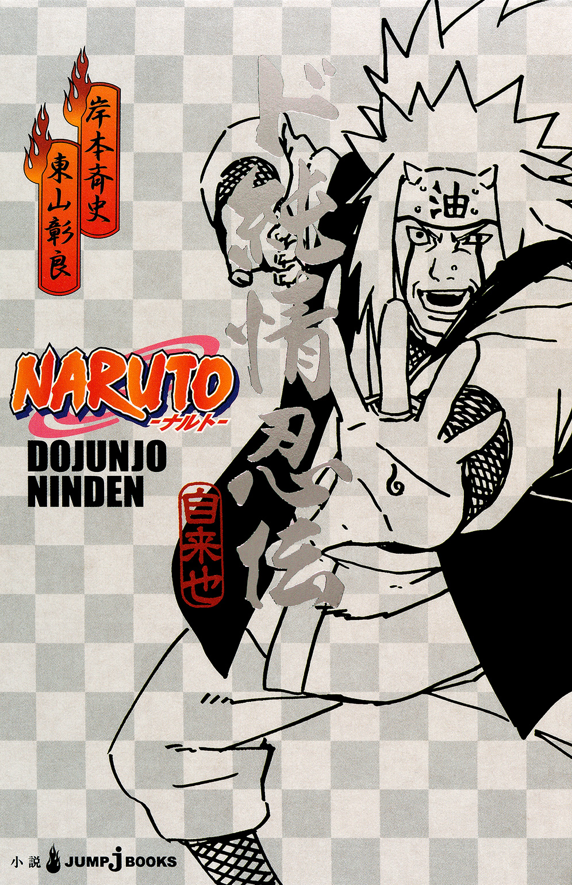
この本は縦書きでレイアウトされています。
また、ご覧になる機種により、表示の差が認められることがあります。
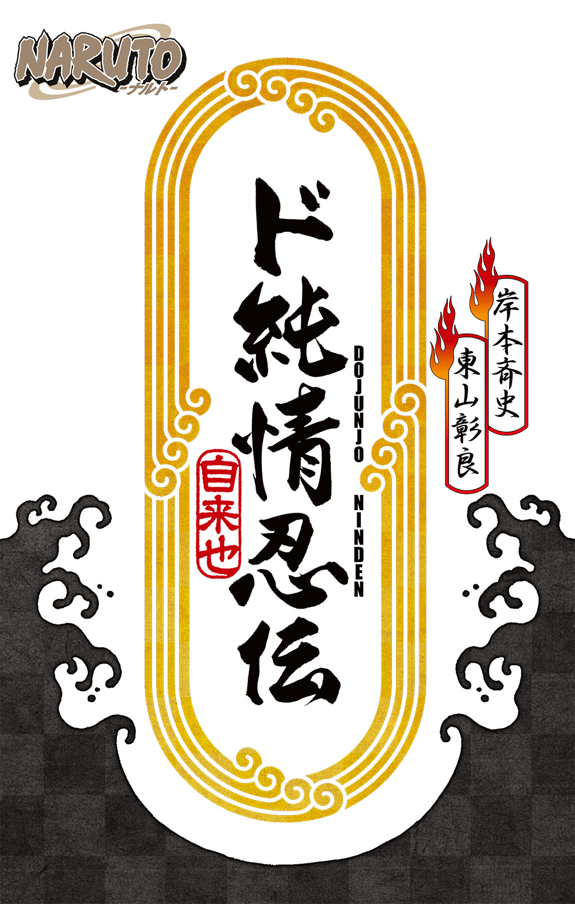
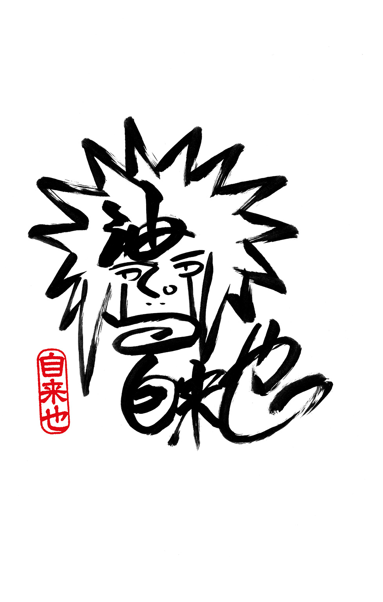
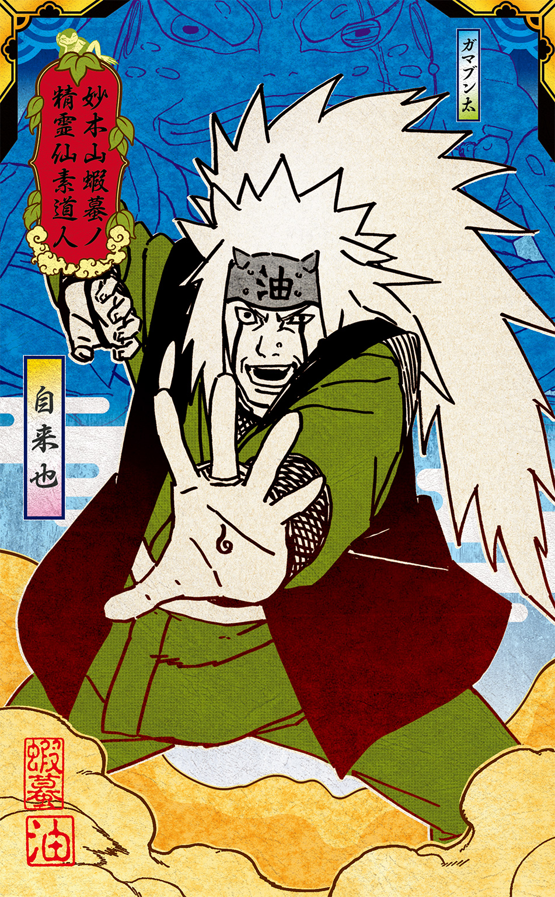
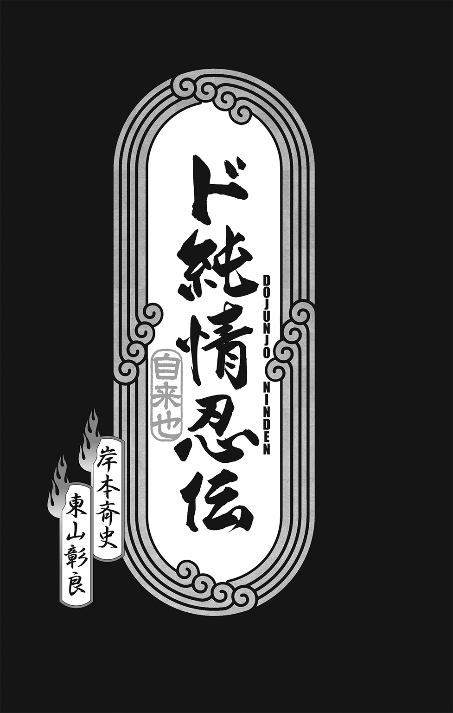
この作品はフィクションです。
実在の人物・団体・事件などにはいっさい関係ありません。
人物紹介
トウ
道隠れの里の若者
チク
道隠れの里の若者
キョウ
道隠れの里の若者
葵ザンキ
道隠れの里の忍
鰆目
道隠れの里の教師
アギト
道隠れの里のヤクザ者
風に吹き散り
無情に手折られ
踏みつけられようとも
火色の花たちよ
咲き誇れ
ひた疾れ
はらりと着物が落ちると、彼女のなめらかな体が現れた。
「あたし、いつも思ってた......トウ、あんたがいつもあたしたちの空気をきれいにしてくれてるって」
「！」
オレは、ゴクリと唾を吞む。
その瞬間、世界にはなんの悩みもなく、芳しい花香が満ちていて。
月明かりの下で見る彼女の体は、青白い炎を内側に宿しているみたいだった。長い髪が、胸を隠している。その下で、彼女の心臓も、ドキドキしているのがわかった。
そう、オレと同じように。
「いいのか......？」
「そのかわり......」目に涙をたたえた彼女が、こくんとうなずく。「痛くしたら......ぶっ飛ばすから」
オレは彼女の細い腰を抱き寄せ、唇を重ねた。
また彼女が、ボンッ、とはじけて消えちまうんじゃないかって思ったけど、そうはならなかった。
彼女は、オレの口づけに応えてくれた。オレの切れた唇に、不器用に、だけどやさしく、キスをしてくれた。
オレの腫れてふさがった瞼に唇をつけ、熱っぽいオレの額に額を押し当て、包帯の上からなくなった耳を撫でてくれた。
震える彼女を、オレはそっと横たえた。顔にかかった髪をそっとかき上げてやる。とてもいいにおいが、鼻先をよぎった。
腹に手を置くと、彼女の唇から「あ......」という小さなうめきが漏れた。
「怖いか......？」
「ううん......平気」
「本当にいいのか......無理してんじゃ......」
「無理なんか、してない」
「.........」
「あたしは......あたしは、こうしたいの」
オレが笑いかけると、彼女も泣き笑いになった。
彼女は手をのばし、オレの頰にそっと触れた。
「でも、ひとつだけ約束して」涙目で、そう言った。「お願いだから、死なないで......絶対に、絶対に、帰ってきて」
１
樹の上で身をひそめたオレは、茶屋の店先でひなたぼっこをしている年寄りたちに、狙いをつけた。
「もうすぐ春だねえ」ひとりが春の陽射しに目を細め、うんとのびをする。「ほら、ウグイスが喉ならしをしてるよ」
「ああ、いい陽気だな」もうひとりが相槌を打った。「しかし、こんな日が来るなんてなあ、長生きはするもんだぜ」
「まあ、永遠に続く戦なんざありゃしねェよう」
「永遠に続く平和ってやつも、これまたありゃしねェんだろうなあ......そういや、新しい道影の候補者がやっと決まったようだぜ」
「まあ、いつまでも臨時執行部に里の行政をまかせちゃおけねェよう。第一、道影がいねェなんて、外聞が悪ぃや......で、どんなやつなんだい？」
「名前はたしか、葵ザンキといったな......なんでも、先代の道影時代の諜報部を粛清したやつなんだが、どうやら女らしいぜ」
「女？」
「目ん玉が飛び出るほどのいい女らしいが、やるこたぁキッチリやるって話だ」
「粛清ってのは、つまり皆殺しにしたってことだろ？」
「女だてらに、情けも容赦もないそうだ」
「しかし、なんでまた？」
「よくは知らねェが......どうやら諜報部の連中、鉏篩院って術の発動条件を突き止めたのに、上に報告しなかったそうだ。そのせいで、オレら道隠れはあんな苦戦を強いられたのさ」
「ソサイイン？ 聞いたことねェな」
「禁術中の禁術だからな。ほれ、むかし沌の里を消し去った愚公移山って禁術があったろ？ 鉏篩院はあれと互角の禁術らしいぜ。西の愚公移山、東の鉏篩院ってなもんよ」
「どうも眉唾っぽいやな」
「じゃあ、おめえは道隠れがどうやって戦局をひっくり返したってんだい？ 戦死者なんざ、オレらは油隠れの三倍も出してんだぜ。それがたったの一晩で、油隠れの里は跡形もなく消えちまった。里がもとあった場所は、いまや砂漠になってて、草木一本生えやしねェんだぜ」
「そのソサイインの発動条件を、諜報部の連中は隠してたってわけか......しかし、なんでまた？」
「さあな、頭のいい連中の考えることは、オレらにゃわかんねェよ......とにかく、そのせいで、死ななくてもいい者が大勢死んだんだ」
「それじゃあ、粛清されて当然さあね――おい、姐さん、抹茶を一服たのむよ」
「ついでに団子もな――しかし、終戦からもう丸一年になるかねえ」
団子というひと言に、オレの口のなかに唾が溢れた。もうどれくらい、甘いものを食ってないだろうか？
かっぱらいの心得をひと言で言うなら、目的のもの以外には手を出すなってことだ。欲張ると、ろくなことにならない。
狙いをつけたら、それを盗ることだけ考えろ。集中しろ。団子、団子、団子......オレの頭のなかでは、串に刺さった団子が踊っていた。
「十五年も続いた戦だったからなあ、まだ終わった気がしやしねェ」年寄りはのんきに続けた。「そのくせ、平和なときってのは、あっという間に過ぎちまうんだ」
「しかし、あの戦、オレはてっきり油隠れの里が勝つって思ってたぜ......それがあんなふうに負けちまうなんてよ。里なんかもう、跡形もありゃしねェ。憎ったらしい敵だったが、哀れなもんだぜ」
「それもこれも、ザンキが諜報部のやつらを拷問にかけて、鉏篩院の発動条件を突き止めたおかげさ」
うららかな陽だまりのなかで、ふたりは同時に溜息をつき、同時に抹茶をすする。
ウグイスの声が、のんびり谺していた。
「で？ ソサイインってのはどういう字を書くんだい？」
「おい、姐さん、ちょっと書くもんを貸してくんな......よく見てろよ、こう書くんだよ」
「姐さん、団子、早いとこたのむよ......ああ、そういう字かい」
「おめえ、この『鉏』ってどういう意味かわかるかい？」
「これは『鍬』って意味だねえ。で、『篩』ってのは『篩』のことかい......しかし、鍬と篩？ そりゃ、いったいどんな術なんだい？」
「オレにわかるわけねェだろ。ただ、発動の代償に、道影様のお子らが五人とも、いいかい、五人ともだぜ！ みーんな鉏篩院に持ってかれちまった」
「ザンキは発動条件を突き止めたけど、代償までは調べがつかなかったんだろうなあ」
「戦の真っ最中だったからな、そこまで手がまわらなかったんだろうよ......とにかく、それが祟って、道影様もお亡くなりになったんだ......戦後のどさくさで、道影様と鉏篩院の契約書も、どっかにいっちまったって話だぜ」
店の娘が団子を盛った皿を持ってきたのは、そのときだった。
いまだ！
オレは枝を蹴って跳び、鷹のように団子へむかって急降下した。
「じゃあ、もうそんな禁術が発動されることもないねえ――あ、こらっ！」
「うわあああ！ な、なんだ、この赤毛!?」
年寄りたちが素っ頓狂な声を漏らし、店の娘が悲鳴をあげた。
２
「ヘヘッ、ごっそさーん！」皿ごと団子をひったくると、オレは年寄りたちに叫び返した。「捕まえられるもんなら、捕まえてみやがれってんだ！」
「この悪ガキめ！」茶屋の店先で、年寄りたちがわめいた。「団子ぐらい、自分で働いて買え......おい、おまわりさん！ あの赤毛を捕まえてくれ！」
通りすがりの警務が、すかさずクナイを飛ばしてくる。
オレは素早く印を結んだ。
酉！
巳！
申！
辰！
「火遁・火廻！」
オレの口からほとばしった火炎が、迫りくるクナイをたたき落とした。
「今度見かけたら、ただじゃすまないぞ！」警務が腕をふりまわした。「この赤毛のドロボー猫め！」
「団子ぐらいでガタガタ言ってんじゃねェぞ！」樹の上に跳び上がりながら、オレは追いかけてくる罵詈雑言を笑い飛ばしてやった。「こんなもんを買うのに、このヤイバ様が汗水垂らして働くかってんだ。見てやがれ、そのうち茶屋ごと買い取ってやらあ！」
枝から枝へと跳び移りながら、団子を頰張る。ひさしぶりに食った甘味は、五臓六腑に染みるほど美味かった。
早くみんなにも食べさせたくて、オレはスピードをあげた。破壊された建物や、崩れかけの壁に貼られたポスターが、視界の端を流れてゆく。
〈葵ザンキ 戦で乱れた道徳を正す！〉
いたるところに貼られているもんだから、見たくなくても目に入っちまう。どうやら、さっきのじじいどもが言ってた、新しい道影候補のようだ。
オレは横目でポスターの女を追った。歳のころは、三十半ばといったところか。たしかに整った目鼻立ちをしているけど、どことなく人を寄せつけないような印象がある。もしかすると、それは長い黒髪を一本に編んでいるせいかもしれない。そのせいで、唇から頰にかけての大きな切り傷が、いやでも目につくんだ。
顔の傷を隠そうともしねェ、とオレは思った。こういう女は、眉ひとつ動かさずに男を破滅させやがるんだ。諜報部を皆殺しにしたってのも、あながち噓じゃねェのかもしんねェな。
目抜き通りの端まで来ると、チクがやきもきしながら待っていた。
オレが樹から跳び降りると、やつがすぐさま訊いてきた。
「どうだった、トウ？」
団子をむしゃむしゃやりながら、オレは着物のなかに隠した戦利品――大根、じゃがいも、干し魚、りんご、パンを地面にぶちまけた。
「ヘヘ、ざっとこんなもんよ」とチクに団子を放り投げ、「ほら、お前も食えよ」
「こんなに盗ったの？」チクは目を丸くし、それから顔を曇らせて、手のなかの団子を見下ろした。「ねえ、トウ、もうやめようよ......やっぱり盗みはよくないよ。だいたいトウはそんな頭してんだから、目立ってしょうがないよ」
「髪が赤いのは生まれつきだ」オレはやつの頭を、バシッとはたいてやった。「言っとくがな、かっぱらいは芸術だぜ。間合いをちゃんと読めなきゃ、十中八九とっ捕まっちまうんだ。どんな抜け目のねェやつでも、かならず隙ができる。そこを狙うのよ。一瞬の勝負さ。自慢じゃねェが、かっぱらいに関しちゃ、オレは天才だぜ。七歳のころからかっぱらいをやってるけど、一度も捕まったことねェし」
「それはそうかもしんないけど......」
「それに、腹が減って死にそうだって言ったの、お前だろ？」
「だって、三日も食べてなかったから......」
「つべこべ言わずに食えよ。買ったもんだろうが、かっぱらってきたもんだろうが、胃袋に入りゃ同じさ......あと、外にいるときはオレをヤイバって呼べ」
「ヤイバって......先週まではカマイタチだったよね？ その前は、たしかフブキだったし......」
「カマイタチは、長ったらしいからやめた。昨日から、オレはヤイバだ。お前もなんか強そうな通り名をつけろ。チクなんて、ナメられるぞ」
「ぼくはこのままでいいよ」ヘタレのチクが目を伏せた。「死んだ父さんたちが、せっかくつけてくれた名前だし」
「くそ......これっぽっちじゃ、キョウにまた嫌味を言われるな」オレは団子の串を投げ捨て、「もっとなんか、かっぱらいに行くか」
「もうやめときなよ」
「なんでだよ？ 黙ってても、食い物はむこうからやってこねェんだぞ」
「明日、ぼくが曲橋に行くから」
「日雇い仕事をやるのか？」オレは鼻で笑い飛ばしてやった。「朝から晩まで働いて、いくらになるか知ってんのか？ 曲橋ではした金を稼いだところで、一日も食えやしねェんだぞ」
「それでも、他人から盗むよりはましだよ......それに新しい道影候補は、他人のものを盗んだら腕を斬り落とすという法案を里の上層部に提出しているそうだよ」
「あの葵ザンキって女か？ 何者なんだ？」
「ぼくも暗部出身だってことしか......でも、拷問のスペシャリストだった人みたいだよ」
「ケッ、そんな面してやがるぜ」
「だからね、トウ、もう盗みは......」
「捕まらなきゃいいんだよ」
「.........」
「いいか、チク......世の中、なにをするにも金だ。なにかまっとうな商売がしたくても、金がなきゃなにもはじまらねェ。そんで、金ってのはまとまった額がないかぎり、食って、寝て、ボサッとしてるうちに勝手になくなっちまうんだ。金を産み出すのは、まとまった額の金だけなんだよ」
「トウが曲橋に行かない理由は、わかってるよ」チクが言った。「ひとりで働いても、ぼくとキョウを養えないからだろ？ だから、盗みをやってんだ。でも、捕まったらどうすんのさ！」
「だーから、このヤイバ様が捕まるはずがないってーの！」
どこからともなく、瘦せて、薄汚れたガキどもがやってきて、オレたちの戦利品をじっと見つめた。ちょっと大きな男の子が、チビの妹の手を引いている。
「これ以上、ぼくたちのために......」チクは、ガキどもに気がついていないようだ。「トウにばっかり危ないことをさせられないよ」
「つまんねェ心配すんなって」オレはガキどもを見ないようにして、チクに言った。「じつは、アギトの仕事を手伝おうと思ってんだ」
「え？ あの人たちはヤクザだよ」チクは目をすがめ、「やめといたほうがいい」
「だけど、あいつらといれば、食いっぱぐれることはねェ。お前とキョウに、美味いもんを食わせられる」
「そんな......ぼくたちはそんなもの――」
「いらねえ、なんて言ったらぶん殴るぞ」
チクが口をつぐんだ。
「食うより大事なことなんてねェんだからな。ちゃんと食ってなきゃ、心がすさんじまうんだぞ。心ってのは、胃袋とつながってんだからな」
「それはそうだけどさ......」
「オレらは三人でひとつだ、そうだろ？」
「......うん」
「お前とキョウは頭がいい。だから、食い物の心配なんかしてねェで、ちゃんと勉強しろ。こっから抜け出すには、それしかねェ」
「でも......」
「でももクソもねェ」
「.........」
「オレは頭が悪ぃし、勉強って柄じゃねェ。だけど、お前とキョウのことだけは、ぜってーに守ってやる」
「トウ......」
「だーから、ヤイバだっての」ニカッと笑いかけてやると、チクが泣きそうになった。オレは照れ隠しに、盗品を物欲しそうに見ているガキどもに顔を振りむけた。「腹が減ってんのか、ガキ？」
チビのほうがうなずき、大きいほうがゴクリと生唾を吞んだ。
「お前、その子の兄貴か？」
男の子のほうが、うなずく。
「名前は？」
「ヒョウキチ」
「父ちゃんと母ちゃんは？」
「......死んだ」
「いま一番なにが食いたい、ヒョウキチ？」
「ラーメン......かな」
「ラーメンか、いいな......熱々のスープにからんだ麵を、こうズズズッて景気よくすすってな」
ゴクリと生唾を吞む音がまた聞こえた。
「だけど、そうやってみじめったらしく他人の食い物を見てても、いつまでもラーメンは食えねェぞ」
「.........」
「ラーメンが食いたきゃな、自分の力でぶん取ってくるしかねェんだよ」
ガキがにらみつけてくる。
いい目だ。
だから、オレは野菜や魚やパンや果物をまとめて抱え上げ、兄ちゃんの腕のなかにドサッと落としてやった。
ガキどもが目をパチクリさせた。
「いいか、ガキ......自分の手を汚す覚悟がなきゃ、ぜってーに幸運なんか摑めねェぞ」オレはガキの頭をガシガシ撫でてやった。「次はお前がだれかにそのことを教えてやんな」
チビがりんごや大根をガツガツと貪り食うその横で、兄ちゃんがうなずいた。
「やっぱりトウは、アギトたちなんかとつき合えっこないよ」
チクが自分の団子を差し出すと、女の子がにっこり笑って「ありがとう」と言った。
「どんなに悪ぶってても、きみはやさしすぎるから」
「だーから、外では――」
「はいはい、ヤイバでしょ？」
「ちぇっ」
「あはは」
「こいつらも、オレたちと同じさ」オレは言った。「まあ、食い物なんか、またかっぱらえばいいだけのことだしな」
「照れなくてもいいよ、きみは正しいことをしたんだから」
「うっせえよ」
「あの子たち......ちゃんと生きていってほしいね」
「......そうだな」
食い物を大事そうに抱えて歩き去るガキどもを、オレたちは見送った。夕陽がふたつの小さな影を、長々と土塊道に引いていた。
「なあ、チク......ひさしぶりにラーメン、食いてェな」
「そうだね」
「むかしはよ、よくキョウと三人で食いに行ったな」
「うん、三楽のチャーシューメンは美味しかったね」
「いつかまた食いに行けるのかな？」
「行けるよ」チクが言った。「絶対に行けるさ」
「ラーメン一杯でいいのにな」オレは言った。「オレらみてェのがゲラゲラ笑って暮らすには、そんだけで充分なのにな」
３
家に帰ると――つっても、空き家に勝手に住みついてるだけだけど――キョウが風呂場で歌っていた。
父さまを呼んだらよお
姉やを連れてった
母さまを呼んだらよお
兄やを連れてった
鬼が来るときゃよお
よい子はおめめ閉じて
お口むすんで
ねんねしな
腹が減っていまにもぶっ倒れそうだったけど、そんなことはどうでもよかった。
「......！」
例の、バッシャー、カッポーン、という艶めかしい音が、オレにおいでおいでしていた。
考える前に、体が動いていた。どこからどう見ても、オレは健全な十六歳というわけだ。
旋風のように家を飛び出すと、ササササッと裏庭にまわりこんだ。下草に身を伏せ、あたりを注意深くうかがう。
異状なし。
急いては事を仕損じる。オレはゆっくりと爪先立ちで標的に近づき、風呂場の窓をそーっと押し開けた。
よし！
ゴクリと生唾を吞み、慎重に窓の隙間に顔を近づけ、そして湯煙に目を凝らした。
「！」
湯浴みをしているキョウの白い背中が見えた。長い栗色の髪を頭の上に束ねている。後れ毛がひと房、濡れた首筋に張りついていた。くびれた腰がなめらかに膨らんでいくあの幸せな曲線を、オレはしっかりと瞼に焼きつけた。
くそ、もうちょっとこっちをむいてくれ。顔が変形するほど窓枠に押しつける。そしたら、もっと幸せな曲線が見えるのに！
キョウが横をむき、肩から湯をかける。湯気の立つ肌が薄桃色に染まり、濡れた胸の谷間には、全ての男の夢と希望と悲しみが詰まっているみたいだった。
オレの心臓は高鳴り、頭がグラグラ煮立った。
と、不意にキョウがふりむく。
「！」
「......トウ？」慌てて首をひっこめたオレに、キョウはやさしく呼びかけた。「そこにいるの、トウでしょ？」
「あわあわあわあわ......」どうしたらいいかわからず、オレは地面に這いつくばって犬みたいにくるくるまわった。「あ......オレはべつになにも......てゆーか、ふつうに紳士らしく散歩してただけで......」
「来て」
「......へ？」
「来て、トウ」
オレは固唾を吞み、行くべきか退くべきか、おおいに迷った。
非常に難しい局面だけど、なにもしないで後悔するよりは、当たって砕けたほうがずっといい。
意を決して立ち上がると、オレは正々堂々と窓の前に立った。
自分が風呂を覗いていたことなどすっかり忘れ、なにか使命感のようなものすら感じていた。
オレとキョウの視線が交差する。
彼女は、まっすぐにこっちをむいていた。湯煙のせいで、肝心なところは幻のように霞んでいるけど、それでもつんと上をむいた胸の形は、かろうじて見て取れた。
キョウは体を隠そうともせずに、窓辺へ歩み寄った。なにもかもが、まるで夢のようだった。
「あたし、前からトウのことが......」
「言うな」
「......トウ」
「そっから先を女に言わせるほど、オレは野暮じゃないぜ」オレは窓枠に身を乗り出し、「ガキのころから、お前とはいつかこうなる予感がしてたぜ」
「でも......チクは？」
「大丈夫、学校に行ったよ。オレたちはいま、ふたりきりさ」
「うれしい」
「来いよ」
彼女のはしばみ色の瞳が潤み、その可愛らしい顔を近づけてくる。頰が紅潮しているのは、湯を使っていたためばかりではないはずだ。
「トウ......」
「オレみたいな男に惚れると、苦労するぜ」オレはうーんと唇を突き出した。「だけど、上手くいかない日だって、ふたりでいれば――」
「だーれが惚れるか、このどスケベ野郎！」
「......っ！」
背後の声にふりむく間もなく、頭蓋骨が陥没するくらいの衝撃が、脳天にドゴッと炸裂した。
「へぐっ！」
危うく舌を嚙み切ってしまうところだった。
風呂場のなかにいたキョウが、ドロン、と白煙に巻かれて消える。
そのかわり、バタリと倒れ伏したオレのうしろで、体にタオルを巻いた本体が拳を突き出していた。
「どっかで聞いたようなくっさいセリフ吐いちゃって......言っとくけど、たとえあんたがこの世で最後の男だとしても、絶対にありえないからね」
「.........」
ううむ、分身の術か......頭の痛みと、心の痛みと、そして炎のような恥ずかしさで、オレはしばらく死んだふりをしていようと心に決めた。腕を上げたな、キョウ......。
「一日中、どこほっつき歩いてたのよ？ あんたがいないから、お風呂を沸かすのも、一苦労だったんだからね」
「オ、オレの火遁・火廻は、風呂を沸かすためにあるわけじゃ......」
「で？」と、キョウ。「今日の収穫は？」
オレは震える手で、懐から最後のりんごを取り出した。
「これっぽっち!?」キョウがオレの胸倉を摑みあげて、ガクガク揺さぶった。「もう家の食糧は底をついてんのよ、わかってんの!?」
「うわあああああ！ ごめんなさい！ ごめんなさい！ あ、明日こそ......明日こそなんか探してきますからっ！」
「このりんご、まさか盗んできたんじゃないでしょうね？」
「ち、違います！」とっさに噓が口をついて出る。「お......お年寄りの荷物を持ってあげたら、くれたんです！」
「ほんと？」
「ほんと、ほんと！」
「今度また他人様のものを盗んだら、たたき殺すわよ」
「違います！ おばあさんがくれたんです！」
「ふん」
キョウはオレを投げ捨て、さっさと「かえる板」を裏返した。
かえる板は、オレたちの身の安全を知らせ合うためのものだ。家にいるときは表にしておき、いないときは裏にひっくり返しておく。
オレたちが住んでいる界隈は治安が悪いので、チクがこの「かえる板」を考え出した。
たとえば、かえる板が表になっているのに、つまり「家にいる」ことになっているのに、そいつが家にいない場合は、悪いやつにさらわれたかもしれないということになる。
逆に、板が裏になっているのに、つまり「家にいない」ことになっているのに、当の本人が家にいたら、それは悪いやつが化けている可能性があるということだ。
「な、なんでオレの板を裏にするんだよ？」恐る恐る訊いてみた。「オレ、今夜はもうどこにも出かけるつもりは――」
「学校へ行くわよ」長い髪をいつものようにツインテールにキュッと結びながら、キョウが言った。「あんた、サボりすぎよ」
「.........」
「ほら、行くわよ」
「いや、オレ、今日はちょっと頭痛が......」
「もう一発いっとく？」
「ごめんなさい......すぐ支度します」
そんなわけで、オレは行きたくもないのに、ひさしぶりに学校へひっぱっていかれたんだ。
４
学校といっても、いわゆる忍者学校ではない。
鰆目ってじいさんが身銭を切って、オレらみたいな孤児のために開いてくれている、まあ、無料の夜間職業訓練所のようなところだ。忍術のほかに、男なら大工仕事や帳簿つけ、女なら料理や裁縫なんかを教えてくれる。
鰆目学校は、戦で焼け残った神社の集会所を教室として使っていた。
「あれ？」教室の一番前に座っていたチクが、オレを見てにっこり笑った。「珍しいね、トウが学校に来るなんて」
オレはやつのそばを通りすぎざま、頭をバシッとはたいてやった。「だーから、オレはヤイバだっての」
同じクラスのミナミって女がガタッと席を立って、オレをにらみつけた。
「......な、なんだよ？」
「いいんだよ」チクがミナミに言った。「トウはふざけてるだけなんだから」
「あれ？」オレはチクとミナミをかわるがわる見た。「なんだ、お前ら......なんだ、この感じ？」
「なーにがヤイバよ」キョウがオレの頭をどつく。「あんたの頭んなかは、半分がバカなことで、あとの半分はもっとバカなことしか詰まってないんだから」
「なんだと、こら？」
オレはチクとミナミのことをうっちゃって、ギロリとふり返った。
男子たるもの、公衆の面前で女にコケにされたとあっちゃ、さすがに黙っちゃいられない。だから、キョウの横っ面をひとつ張って、オレって男をキッチリ教えて――嗚呼、そうできたら、どんなにスカッとするだろう！
「『なんだと、こら』？」口の端を凶暴に吊り上げるキョウ。「あんた、それ、あたしに言ってんの？」
「あ......いや、そうじゃなくて......『なんだか暗っ』って言ったんだよ......」
キョウが目をすがめた。
当節の流行りで、彼女は浅黄色の着物の裾を、思いっきり短くしていた。背中まで垂らした長い栗色の髪は、毛先がまだ少し濡れている。すらりとのびたその脚を見たとたん、風呂場の光景が蘇って、鼻血を噴きそうになった。
「うん、教室がちょっと暗いような気がしたからさ......そうそうそうそう！」
キョウは虫けらを見るような目でオレを見下ろし、フンッと鼻を鳴らして、さっさと自分の席へ歩いていった。
オレはその背中に男らしく中指を突き立て、ちくしょう、ブス、ちょーしに乗ってんじゃねェぞ！ と心のなかでガッツリ言ってやった。
チクがニヤニヤしてたから、やつの頭に拳骨を食らわせてやった。
「やめてよ、トウくん！」チクのかわりにミナミが文句を言った。「すぐにそうやって手を出すの、よくないと思う」
「.........」
チクが、大丈夫だよ、ぼくなら平気だから、とかなんとか言ってミナミをなだめた。
なんなんだ、このクラスの女どもは！
オレとチクと、それにキョウのオヤジたちは、いまのオレとチクとキョウみたいに、ガキのころからツルんでいた。いっしょに学校へ通い、いっしょに悪さをし、いっしょに叱られ、いっしょに恋をし、いっしょに戦へ駆り出され、そしていっしょにくたばった。
オヤジたちは、オレらにも仲良くなってほしくて、〈夾竹桃〉って花から一文字ずつとって、名前をつけた。
夾竹桃って花には、強い毒がある。だけど、その毒を使って、人の心臓を強くする薬が作れちまう。それに、空気もきれいにしてくれる。
「なあ、トウ」ガキのころ、オヤジはよくオレにこう言ってた。「人生はきれいごとだけじゃやっていけない。だけど、忘れるな。毒は薬になるし、薬は毒にもなるんだ」
オレとチクとキョウは、ガキのころから十六年間いっしょに育ってきた。いっしょに学校へ通い、いっしょに悪さをし、いっしょに叱られ、そして戦のせいでいっしょに家族を失っちまったんだ。
教室のドアがガラガラと開き、鰆目のじいさんが入ってくる。そして、オレを見るなり、目を丸くした。
「トウさん」じいさんの顔に笑みが広がった。「また学校へ来てくれる気になったのですね」
「鰆目先生よう」オレは斜にかまえ、「オレのことは、これからヤイバって呼んでくんな」
「.........」
「なぁに、出席簿の名前をちょいと書き替えてくれりゃいいんだよ」
「ヤイバ、ですか......しかし、トウさん――」
「おひけぇなすって！」腰をぐっと落とし、仁義を切ってやった。「あっし、生まれも育ちも道隠れの里、物心ついたときから世間様に背をむけ、任俠道で切った張ったの毎日でございました。愛も情けも、義理盃にゃかなわねえ。夾竹桃の陰で泣いているおっかさんにゃ申し訳ねェが、男一匹ぃいい、はぁああああ、修羅のヤイバたぁあああ、オレのぉお――」
ゴンッ！
本日二発目の鉄拳にオレは気を失い、キョウに引きずられて一番うしろの席にぶちこまれてしまった。
「すみません、先生、授業をはじめてください」
「ありがとうございます、キョウさん」鰆目のじいさんは咳払いをし、「しかし、授業の前に、ちょっとお話をしておきたいことがあります。これはとても大事なことですので、トウさん、あなたもちゃんと聞いておいてくださいね」
「えー、その話、長くなんのかよ？ いいから、さっさと授業――」
キョウが足をドンッと踏み鳴らし、机に突っ伏していたオレは、シャキッと背筋をのばす。
「どうぞ、鰆目先生」キョウが言った。「続けてください」
「みなさんも知ってのとおり、この学校はわたしが個人的に開いているものです」鰆目のじいさんは話を継いだ。「しかし、新しい道影候補の葵ザンキという女は、このような教育施設を疑問視しています。わたしたち道隠れの里は、長くて苦しい戦に勝利したばかりです。多くの忍が命を落としました。里にしてみれば、きみらのような若者を、忍として育てたいのだと思います。この学校を封鎖して、きみらをアカデミーに編入するよう勧告してきました。きみらのなかにも、もとはアカデミーに通っていた子もいます。だからわかると思いますが、アカデミーには忍になるための過酷な試練が用意されています。戦前だと、毎年入学者の六割が、修業中に命を落としていました。この学校でも多少の忍術は教えていますが、忍術よりずっと大切なことは、命の大切さをきちんと知ることです。葵ザンキは道隠れ至上主義者です。この里以外の人たちを、劣等人種だとみなしています。だから、自分たちが導いてやらなければならないと主張しています。そのためには武力行使も辞さない、と。しかし、そんな考えは間違っています。敵だって、わたしたちと同じ人間なんです。わたしたちに愛する者がいるように、敵にだっているんです......きみたちとおなじように、わたし自身も先の戦で息子を失いました。だから、もう二度と......二度と戦など起きてほしくありません。しかし、わたしがどんなに願おうと、葵ザンキのような人間がいるかぎり、戦はまた起こります」
窓に石つぶてが当たり、オレは外に目をむけた。暗がりのなかで、アギトとその仲間たちが手招きしていた。
「そこで、まずきみたちに質問します」ひと呼吸つき、「鰆目学校に残りたいですか？ それとも、アカデミーに行きたいですか？」
「あたしは鰆目学校が好きです！」勢いよく立ち上がったのは、キョウだった。「たぶん、みんなも同じ気持ちだと思います」
クラス中がうなずく。
「ウチらは鰆目先生を、本当のお父さんだと思っています」ミナミが抜け目なくそう言った。どのクラスにもひとりはいる、先公の飼い犬のような優等生だ。「みんなこの学校に残りたいって思っているはずです」
「ありがとうございますミナミさん、それにキョウさんも......わたしも、きみらを自分の子供のように思っていますよ」そう言いながら、鰆目のじいさんは懐から巻物を取り出した。「もしきみらが本当にそう思ってくれるなら、わたしは里の上層部に直接掛け合ってみようと思います......きみらにお願いしたいのは、里を説得するために、この嘆願書に署名してもらうことです。血判を捺すとより効果があると思いますが、如何ですか？」
「あたし、一番に書きます」そう言うと、キョウはオレをふり返った。「あんたも書きなさいよ、トウ」
が、オレはすでに窓枠に足をかけているところだった。アギトたちがじれったそうに、鋭い口笛を飛ばしていた。
「ああ、悪ぃ......オレはパスだ」
「トウ！」
「トウさん......」
「だーから、ヤイバだっての」
「いいえ、あなたはトウさんです。そんな通り名を使っていると、本当のきみはその通り名に吞まれてしまいます。その通り名のようにふるまい、他人を傷つけ、そして自分をも傷つけるでしょう」
「.........」
「きみがそんな通り名に執着するたびに、わたしには本当のきみが何者かを思い出させてあげる責任があります......トウさん、わたしの考え方は受け容れられませんか？」
「鰆目先生の言うことにゃ一理あるけどさ、戦ってやつは勝たなきゃ意味ねェんだよ」オレは言った。「そのザンキってやつは虫が好かねェけど、すくなくとも道隠れの里がよそからナメられねェようにしようとしてんじゃね？」
「トウ！」キョウが突進してくる。「あんた、いい加減にしなさいよ！」
「おわっ！」オレは頭を下げて、ブンッと風を切る彼女の豪腕をかわした。「危ねっ！」
「もういいですよ、キョウさん」鰆目のじいさんが悲しそうに言った。「トウさんにはトウさんの考えがあります。無理強いはよくありません」
「でも、先生！」
「へへへ」悪いな、キョウ、オレにも立場ってもんがあるんだ。アギトたちが見てるかもしんねェから、先公に尻尾ふるわけにゃいかねェんだ。「ま、そういうこった」
オレが窓から飛び降りると、キョウもあとに続いた。
「待ちなさいよ、トウ！」
崩れかかった神社の境内で、オレたちはむかい合った。藪の陰からアギトたちが、いったい何事かとぞろぞろ出てくる。
「あんた、まだこんなのとつき合ってんの？」キョウがアギトたちにむかって腕をふりまわした。「こいつらは人の生き血をすするダニよ！」
「言うねえ、このねーちゃん」アギトが出張ると、一味徒党がニヤニヤした。ちなみに、アギトは身の丈が二メートル近くある。「ちょっと可愛い顔してるからって、いい気になってんじゃねェぞ」
「話しかけるな、ダニ」
「フブキの女か？」アギトがニヤリと笑うと、口からギザギザの歯がのぞいた。「そんなに怖がらなくてもいいだろ......ははーん、さてはお前、まだ男を知らねェな？」
キョウがギロリとやつをにらみつけた。
「おいおい、なにやってんだよ、フブキ」チンピラたちが、オレのむかしの通り名を呼んで囃したてた。「てめーの女くらい、ちゃんと躾けとけよ」
ヤベェな......オレは思った。チンピラどものエンジンがかかっちまう前に、上手くこの場を収めないと。
「来いよ、ねーちゃん」アギトが手をのばす。「フブキが教えてくれねェことを、このアギト様が教えてやるぜ」
サッとふたりのあいだに割りこむと、オレはキョウの着物の裾をパッとめくってやった。
「キャッ！」とっさに着物の裾を押さえつけるキョウ。「な、なにすんのよ!?」
アギトが目をパチクリさせた。
「可愛い声出してんじゃねェよ」オレはゲラゲラ笑いながら、キョウを背中に隠し、アギトにむき直った。「アギトさん......こんなペチャパイに手ェつけたら、男アギトの名がすたりますよ」
「なんですってェ！」虎のようにいきり立つキョウ。「だれがペチャパイよっ！」
「こんなガキ相手にしてねェで、もう行きましょうよ」オレはさっさと先に立って歩いた。「アギトさんには、もっとゴージャスな女じゃなきゃ。なんたって、オレらの親分なんですから」
「お、おう......」オレにそう言われて、アギトはまんざらでもなさそうだった。「それもそうだな」
「ちょ、ちょっと待ちなさいよ、トウ！」
「オレのやることに、いちいち首突っこむな」
「......ッ！」
「ガキはちゃんと勉強してりゃいいんだよ」仲間たちと立ち去る前に、オレは肩越しに言ってやった。「ほら、鰆目のじいさんが待ってるぞ、優等生」
「.........」
立ち尽くすキョウの姿が、ひどく物悲しかった。
あぁあ、あとでまたシバかれるんだろうなあ......。
５
アギトは十五年戦争の生き残りで、片目に黒い眼帯をしている。
噂では、敵の手に落ちたとき、ひどい拷問にかけられたらしい。歯を一本残らず削り取られ、爪を一枚残らず剝がされ、目ん玉を片方えぐり取られても、仲間を売らなかったそうだ。それどころか、敵の一瞬の隙を衝いて、自力で脱出した。
「指の関節をはずして、縄抜けをした」と、いつかアギトが言っていた。「それで印を結んで、口寄せ獣を呼んでまんまと逃げおおせたわけよ」
なのに、アギトと五人一組を組んでいたやつは、敵にちょいと脅されただけで、仲間の居場所を吐いちまった。そのせいで、アギトの仲間はみーんな殺されちまったんだそうだ。
「嬉しいぜ、フブキ......やっとオレの仕事を手伝う気になってくれてよ」
「あ、いまはヤイバっす」
「そうか、八重歯か......なんだかピリッとしねェ通り名だが、まあ、お前が好きならそれでいい」
「あ、八重歯じゃなくて、ヤイバ......」
仲間たちが、よろしくな八重歯、頼りにしているぜ八重歯、これからはみんな兄弟分だぜ八重歯、と口々に言った。
バカばっかりだ！ オレは思った。オレも、せいぜいこいつらの一員に、なりきらなきゃな。
「今日はお前の歓迎会だぜ、八重歯」アギトがオレの肩にぶっとい腕をまわす。やつが笑うと、まるで鮫のようなギザギザの入れ歯が光った。「酒も女もたっぷり用意してっからよ、楽しんでってくれや」
オレらは肩で風を切って、ネオンがまたたく里の目抜き通りを練り歩いた。
「あらあ、素敵なお兄さんがたねえ！」飲み屋の女たちが、黄色い声をあげてオレらの袖を引く。「ちょっと飲んでいきなよ、ウチの店はいい娘がそろってるよ！」
「今夜は、新しい道影候補が決まったお祝いだよ！ 特別に安くしとくからさあ！」
仲間のひとりがふざけて客引き女に抱きつくと、みんながどっと笑った。
どこかで怒鳴り声がし、どこかで音楽が流れ、どこかで犬が吠えていた。夜空にかかった朧月さえも、うっすら酔っぱらっているように見えた。
アギトを見かけると、だれもがそそくさと道を開けていく。
油断していると、自分がエラくなったような気がしちまう。オレは気を引き締めた。だって、ヤクザ者になるつもりなんか、さらさらないからな。
連れていかれたのは、オレも何度か出入りしたことのある、アギトたちの隠れ家だった。戦で半壊した無人の雑居ビルに、アギトたちは無断で住みついている。そこで飲んだり、食ったり、寝たり、人を痛めつけたりしているんだ。
階段をのぼり、外廊下を渡り、部屋に入ったとたん、オレは凍りついた。
てっきり、ピンク色の光のなかで、透け透けのドレスを着た女たちが待っているのだと思っていた。
そんなものは、どこにもなかった。
薄ら寒い部屋のなかで、血まみれの男がひとり、天井からぶら下がっていた。
「えーっと......今日はオレの歓迎会って話じゃ......」
「ここじゃねェよ、バカ野郎」アギトがオレの背中をどついた。「パーティは奥の部屋さ」
言われてみれば、たしかに奥の部屋から女たちの笑い声が聞こえてくる。
が、オレはそれどころじゃなかった。鎖で吊り上げられている男から目が離せなかった。
「そいつはオレらのシマを荒らしやがったんだ」だれかが言った。「ぶっ殺して、やつらのシマに捨ててこようって話してたところさ」
「......へ？ こ、殺しちゃうの？」
「この商売、ナメられたら仕舞いだからよ」
「そんな、だめっすよ！」思わず叫んでしまったオレに、全員の視線が集まった。「ああ......えーっと、殺しちまうのはどうかなあって......」
「ほう」アギトがニヤリと笑った。「なんか考えがあんのか、八重歯？」
ヤクザ者たちが、底光りのする昏い目で、じっとこちらを見ている。
「いや、そりゃオレだってアギトさんに上等切るやつは、ぶっ殺すべきだと思いますよ......だけど、ここで殺しちまうのはもったいないなあって......うん」イヤな汗をかきまくっていた。「つ、つまり......それじゃあ、アギトさんの恐ろしさが伝わんねェと思うんすよねえ......それより、生かしときゃ、こいつがアギトさんの恐ろしさを宣伝してくれるんじゃねェかなあ......そうそうそうそう！」
「ふむ」アギトは思案顔になり、「言われてみりゃ、たしかにそうだな」
「でしょ！」と、オレ。「じゃあ、オレがこいつをどっかに捨ててきますよ！」
あっけに取られているチンピラたちを後目に、オレはさっさと男を降ろし、肩に担いで表に連れ出した。
「やい！ アギトの兄貴をなめんじゃねェぞ！」うしろをふり返りふり返りしながら、そのへんをテキトーに蹴飛ばす。それから声をひそめて、素早く言った。「ほら、お前も悲鳴をあげろ」
「......え？」
「ほら、早く」
「ギ、ギャー......？」
「もっと感情をこめろっ」
「ギャー！ ギャー！」
「そうそう、その調子」オレはゴミ箱をひっくり返し、派手な音を立ててやった。「てめェ、二度とこのへんをうろちょろすんじゃねェぞ！」
「ギャー！」
アギトが顔を出したので、オレは男の胸倉を摑み上げて、ガクガク揺さぶってやった。そう、キョウがいつもオレにやるように。
「次に見かけたら、ぶっ殺すぞ！」
それを見て、アギトは満足そうにうなずき、また雑居ビルのなかへとひっこんでいった。
「さあ、早く行け」オレは鋭く言った。
「す、すまねェ......」
「アギトはろくなもんじゃねェ......もうかかわるな」と耳打ちしてから、走り去る男の背中にわざとらしく怒鳴ってやった。「ケンカなら、このヤイバ様がいつでも買ってやるぜ！ ガッハッハッハ！」
６
奥の部屋は、夢にまで見た酒池肉林のパラダイスだった。
ほとんど裸同然の女たちが、一ダースほどいた。つまり着物の丈なんか、「それならいっそのこと、裸のほうがヤラシくないよ」と言ってやりたくなるほど短い。例の、あっは〜ん、うっふ〜ん、が部屋中に満ちていた。
天国だ。
金さえあれば天国だって買えるんだって、オレはあらためて思い知った。
なのに、どうしても楽しめなかった。
たぶんそれは、さっき見た血だるまの男のせいだろう。あの光景がオレに植えつけたのは、天国の入り口には、地獄がぽっかり口を開けているということだった。
「楽しんでるか、八重歯？」酒臭い息をぷんぷんさせたアギトが、オレの横にドサッと腰を下ろす。「気に入った女がいたら......ヒック......遠慮なく持ってけよ」
オレはまったく口をつけてない酒盃を見つめながら、おしるし程度に頭を下げた。
「ちょうどいま、人手が欲しかったところなんだ」
「はあ......」
「隠し財産の話、知ってるか？」
「.........」
「十五年戦争も終わりかけのころ、道影が戦費としてとっておいた莫大な金を、里のどっかに隠しやがったらしいんだ」
「マジすか？」
「一年前、ほとんど負けが決まってたオレら道隠れが、どうやって油隠れを打ち破ったと思う？」
オレはかぶりをふった。
「道影が鉏篩院を呼び出したのよ」
「ソ、ソサイイン？」どっかで聞いたような......あっ、団子をかっぱらったじじいどもが、そんなことを話してなかったっけ？ 「なんすか、それ？」
「詳しいことは......ヒック......だれにもわからねェ」酒がアギトの口をなめらかにしていた。「禁術らしいんだが、術をかけられた油隠れの里はいまじゃ砂漠になっちまってる。生き残りもいねェ。道隠れの里の公式発表じゃ、油隠れはある禁術を復活させようとして自爆したってことになってるよな？ ありゃ噓だ。本当は道影の鉏篩院に全滅させられちまったのよ」
オレはうなずいた。
「その鉏篩院って禁術は謎に包まれてる。発動条件も、代償も......ヒック......なにもわかってねェ。代償は術者の命だって言うやつもいるし、代償なんかねェって言うやつもいる。術者の末代までの子孫の命だって話も聞いたことがある」
「けど、そりゃおかしくないですか？」
「なにがだ？」
「もしそのソサイインを発動する代償が、術者と血のつながりのある子供全部だとしたら、術者の血筋はそこで根絶やしになるわけじゃないすか？ 末代どころか、孫の代だってなくなっちゃいますよね？」
「だーから、だれにもわかってねェんだって」アギトは舌打ちをし、「道影にだってわかっちゃいなかった。で、もしかしたら鉏篩院を発動する代償は、金かもしんねェって考えたんだろうな......ヒック......とにかく、道影は鉏篩院にくれてやる莫大な金を用意していた。だけど、鉏篩院を発動する代償は金じゃなかった。道影の五人のガキがその代償だったのよ。その道影もくたばっちまった。だとしたら、道影が用意した金はどこにある？」
オレはゴクリと唾を吞む。
「そうよ、オレはその隠し財産を狙ってるのよ」酔眼朦朧としたアギトが、オレの肩を摑んで揺さぶった。「でな、お前にちょっとやってもらいてェことがあるのよ」
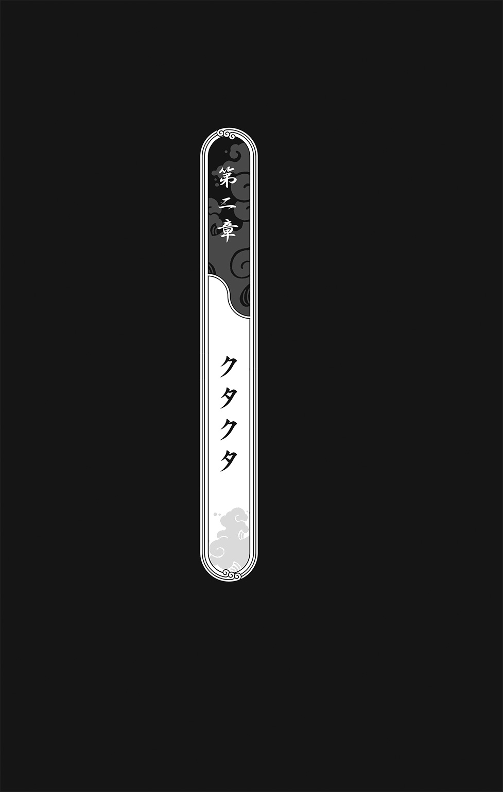
１
家に帰りついたのは、翌日の昼近くだった。
飲めもしない酒を飲まされ、吸いたくもない煙草を吸わされ、イチャつく気にもなれない女たちと一晩中イチャついていたせいで、オレはクタクタだった。
頭は靄がかかったみたいに霞み、瞼は支えきれないくらい重たい。ただただベッドにぶっ倒れて、泥のように眠りたかった。
それなのに、家でオレを待っていたのは、凜と正座をしたキョウだった。
「ずいぶん楽しかったみたいね」
「ほら」オレは昨夜の宴会の食べ残しをキョウにやった。「お前の好きな鮎の塩焼きもあるぞ」
「これであんたも立派なチンピラね」
オレは無言で彼女をやり過ごし、かえる板をひっくり返し、自分のベッドにバタリと倒れこんだ。
このままこの世の終わりまで眠れそうだった。
「へぇえ、いい御身分だこと」キョウのやつが耳元でギャーギャーわめいた。「朝帰りして、そのまま寝てていいんだ？ 仕事は？ チクは曲橋に行ったわよ。あんたもアギトみたいに、だれかを痛めつけに行かなくていいの？」
「.........」
「わっ、酒臭っ！ それに、なにこれ？ ふぅん、香水のにおいか......さぞやいい思いをしたんでしょうねえ、ヤイバ兄貴？ どんな女がいたの？ どうせアギトが金にあかせて、里中の娼婦をかき集めてきたんでしょうけど」
「あのなあ......」オレはガバッと身を起こした。「オレがどんな女と遊ぼうが、関係ねェだろ」
「じゃあ、やっぱり遊んだんだ？」
「悪ぃかよ！ たとえオレがこの世で最後の男でも、ぜってーにありえねェっつったの、そっちだろ？ 言っとくけど、オレは十六の健全な男なんだよ。据え膳があったら、きれいにたいらげてやるぜ！」
「.........」
「な、なんだよ......そんな顔しても、怖かねェや」
キョウの頰に赤みがさし、その大きな目に涙が膨らんでいった。
「......遊んだの？」
「え？ ああ......」オレはあたふたと目を泳がせちまった。「あ、遊んだとも！ ああ、遊んだともさ！」
ひと粒の涙が、キョウの頰をつーっと流れ落ちた。
「へ？ ......ちょ、なに......」
静かに立ち上がった彼女の肩から、着物がハラリと落ちる。
「......なっ！」オレは、薄暗い部屋にたたずむキョウの青白い体から目が離せなかった。「な、なにやってんの、お前......？」
「ありえなくないもん」
「.........」
「あたしとトウは......ありえなくないから」
「キョウ......」
オレはベッドから立ち上がり、キョウのなめらかな腰を抱き寄せる。
しっとり濡れた瞳で、彼女は一途にオレを見上げた。その肌は微熱をおび、心臓の鼓動が伝わってくるようだった。
キョウが目を閉じると、睫毛の長さにあらためて驚く。りんごのように赤い唇を少しだけ開くと、甘い吐息が漏れた。
オレはゴクリと生唾を吞み、彼女の両肩を摑まえる。い......いただきます！
が、嗚呼、むべなるかな......そのぷっくりした唇を熱い口づけでふさごうとした次の瞬間、またしても彼女の体がボンッと白煙に消え、オレの頭にかかと落としがドゴンッとめりこんだのだった。
「むぎゅっ！」
「いつも同じ手にひっかかるなんて、あんた、バカ？」
で、ですよねえ......。
頭からシュウシュウ煙をあげながら、オレは床にバタリと倒れた。もしかすると、オレって本当に阿呆なのかもしれない。
「これまでのあんたもありえなかったけど」キョウが吐き捨てるように言った。「アギトみたいなやつとツルんでるあんたは、もっとありえないから」
ちくしょう、オレは心のなかで叫んだ。オレだって、あんなやつらとツルみたかねェや！
死んだふりを決めこんでいるうちに、そのまま眠りこんでしまった。イヤなことがあったときは、寝ちまうにかぎるんだ。
ガキのころの夢を見た。
十五年戦争のあいだじゅう、死はいつも間近にあったけど、あのときほどオレたちが死に近づいたことはなかった――
２
その朝、まだ眠っていたオレたちは、油隠れの忍たちに家から狩り出された。
まだ夜も明けきってなくて、青みがかった朝靄が里に流れていた。
敵の忍たちはオレたちを里の広場に集めた。オレとキョウとチクは、体を寄せ合って小さくなっていた。オヤジたちはその前の年に戦死していた。
里の人たちは餓えていた。食べるものなんかなにもなくて、オレたちは運がよければネズミや蛇や虫を食うことができたが、たいていは草の茎や根っこでなんとか餓えをしのいでいた。
「怖がることはありませんよ」敵のリーダーがにこやかにそう言った。丸々と太った血色のいい男で、腹一杯食って、毎晩ぐっすり眠っているような感じだった。「あなたがた一般人をどうこうするつもりはありません」
オレたちは、そいつの言葉に耳を澄ませた。
「もうわかっていると思いますが、この戦、間もなく我々油隠れの勝利で終結します。わたしたちはおたがいに、この数年間、激しい痛みに耐えてきました。だれもが愛する者を失いました」ここで言葉を切り、わざとらしく目頭をぬぐったんだ。「しかし、過去にばかり囚われていては、前へ進めません。わたしたちは両里の未来のために、今日、あなたがたにちょっとした提案をさせていただきます」
里の人たちがザワつき、そわそわと顔を見合わせた。そいつの言うとおり、戦況は最悪だった。オレたち道隠れが降伏するのは、時間の問題だった。
「じつは今後、このような悲劇が二度と起こらないように、わたしたち油隠れの里は、あなたがた道隠れの里と合同でアカデミーを開こうと思っているのです。今日は、新しくつくるアカデミーに入ってもらう新入生をスカウトに来ました」
太った男がそう言うと、敵の忍たちがリヤカーを牽いてやってきた。
「！」
オレたちは目を見張った。カラカラに乾いていた口のなかに、唾が泉みたいにあふれた。
肉、魚、鶏、パン、団子、大福、果物、野菜――リヤカーには、食い物がこぼれるほど積んであった。そんなリヤカーが、何台も、何台も、オレたちの目の前に並べられた。
「忍たるもの、体力勝負です」無造作に骨付き肉を取り上げると、太った男は肉にかぶりついた。「まずはたっぷり食べていただき、体力をつけてもらわなければなりません。しかし、食べ物は無限ではありません。ですから、今日は選抜試験を行おうと思っているのです。忍の素質ありと認められた者は、晴れて油・道合同のアカデミーの第一期生となることができます」
オレたちの目はひとつ残らず、食い物に釘づけになっていた。
チクは何度も生唾を吞んだし、それはオレも同じだった。キョウは血走った目で、なにかに取り憑かれたみたいにリヤカーを見ていた。
「あそこに的が見えますね？」
太った男の太った指がさしたのは、三十メートルほど離れた樹に打ちつけられた的だった。
「いまからクナイを投げてもらいます。クナイをちゃんと的に当てられれば、素質ありと見なします」
「！」
「じゃあ......もしはずしたら？」だれかが、おずおずと尋ねた。
「残念ですが......」太った男は憐れみたっぷりに首をふり、「そのような方の面倒を見ている余裕はありません」
忍たちの指示で、オレたちは一列に並ばされた。オレとチクとキョウは、列の真ん中あたりにいた。
的にクナイを当てることさえできれば、あの食い物がオレのものになる――オレの頭のなかには、そのことしかなかった。
そして、選抜試験がはじまったんだ。
最初の男がクナイを三回投げ、三回ともはずした。
「も、もう一度やらせてくれ！ 三日もなにも食ってなくて、力が入らなかったんだ......オレはこう見えても、忍術の心得があるんだ！」
敵の忍たちは、すがりつく彼を追い払った。
次の男は三回投げて、二回的に当てた。
「お見事」太った男が言った。「あなたは食べ物をもらってください」
素質ありと認められた男は、両手で肉を摑んでガツガツ貪り食った。もう明日なんかないんだ、という感じで。
「オレがぜってーに当ててやる......」オレはキョウとチクに宣言した。「お前らもはずすなよ」
キョウがうなずいた。
チクは無反応だった。
選抜試験はつつがなく進んでいった。
三回中二回成功すれば、合格だった。合格したやつらは、まるで砂糖に群がるアリのようにリヤカーに群がっていた。不合格になったやつらは、忍たちに野良犬のように追っ払われた。
一度、不合格になったやつが、錯乱してリヤカーに突っこんでいった。食い物だ！ 食い物だ！ と叫びながら。だけど、たちまち背中にクナイが何本も刺さって、死んでしまった。太った男が倒れたやつを見下ろして首をふった。
追い払われた者たちは、いつまでも未練たらしく広場に居残り、リヤカーの食い物を貪り食う合格者たちを遠巻きに眺めていた。
あと三人でオレの番がまわってくるというとき、チクがオレの耳元で鋭くささやいた。
「はずして、トウ」
「......？」
オレには、チクの言ったことがぜんぜん理解できなかった。
「的に当てちゃダメだ」いつもは優柔不断なチクが、このときばかりはオレから目をそらさなかった。「やつらは身を潜めている道隠れの忍を炙り出すつもりなんだ」
「！」
「でも、そんな......」キョウがうろたえた。「でも、どうせ飢え死にするなら......あたしは、あたしは......」
「やつらの立ち位置をよく見て」チクが言った。「リヤカーを取り囲むようにして立っている。ボクにはやつらがなにかを警戒しているように見える。もしボクたちを迎え入れるつもりなら、あんなふうに警戒する必要はない」
「それは......」チクの言うとおり、やつらはなにかを警戒しているふうだった。だけど、それを正しく理解するには、オレたちはみんな腹が空きすぎていた。「それは、不合格になったやつが食い物を奪いに来るかもしんねェから......」
「とにかくはずして」チクは頑として譲らなかった。「キョウも、絶対に当てちゃだめだ」
「.........」
敵の忍がどよめく。
見ると、オレのふたり前の男が、クナイを三本とも的のど真ん中に集めていた。
「素晴らしい！」太った男が、ホッホッホ、と笑った。「彼にはたっぷり食べていただきましょう」
その男は悠然とリヤカーのほうへ歩いていき、ほかの人たちを押しのけ、鶏の丸焼きにかぶりついた。
「なあ、チク......考えすぎだって」オレはチクに言った。「この戦、どうせオレらの負けだろ？ 油隠れがいまさらオレらを殺す理由がねェじゃん」
キョウが強くうなずいた。
オレのすぐ前の男は一本しか当てられず、敵の忍に背中を押されて広場から出された。
「次！」
その声に、真っ先に反応したのは、チクだった。オレをかわして前に出ると、チクはさっさとクナイを受け取ってしまった。
「チク！」オレとキョウの声が重なった。
チクは肩越しにふりむき、しっかりとうなずいた。それからクナイを投げ、見事に三本ともはずした。そして忍に追い払われる前に、自分からさっさと広場を出ていったんだ。胸を張って。ふり返ることもなく。
「次！」
オレとキョウは顔を見合わせた――
３
薄目を開けたオレの視界を、桜の花びらがヒラヒラと横切っていく。
どれくらい眠っていたのか、開け放った縁側からは黄昏の光が射しこんでいた。
「目が覚めた？」
半身を起こすと、体に毛布がかけられていた。
「ずいぶんうなされてたわよ」ちゃぶ台に夕餉を並べながら、キョウが言った。夕餉といっても、蒸かしたサツマイモと、キョウが河原で摘んできた菜の花が入った吸い物だけだが。「心にやましいことがあるからよ」
「......チクは？」
「まだ帰ってきてない」
「そうか......」
「どうしたの、トウ？」キョウが心配顔で言った。「どこか具合が悪いの？ 顔が蒼いわよ」
オレは夕暮れに舞う桜をぼんやりと見つめ、それから口を開いた。
「ガキのころ......油隠れの忍どもに殺されかけたことがあったろ？」
キョウがやってきて、オレのそばに正座をした。
「食い物をどっさり積んだリヤカーを見せつけて、オレらにクナイを投げさせたときさ......あんとき、チクがいなきゃ、オレとお前は殺されてたよな」
「そうね......あんたまではずすから、びっくりしたわ」
「道隠れの忍だと判断されたやつらは、みーんな殺されちまった......まあ、死ぬ前にせめてたらふく食えたことだけが、唯一の慰めだ」
「あのときの夢を見てたの？」
「オレらはチクにでっけェ借りがあるんだ」
「そうね」
「あいつはスゲェやつだよ」オレは言った。「あんとき、あいつだって何日も食ってなかった。それでも冷静に状況を分析して、オレとお前を救ってくれたんだ」
キョウがうなずく。
「オレがかっぱらいをやると、あいつはいつも困ったような顔になるんだ」
「.........」
「それでも、オレはチクやお前にひもじい思いをさせたくねェ......腹が減ると、オレらはオレらじゃなくなっちまう。簡単に悪ぃやつらに操られちまう。そんで、食い物を盗むよりかもっと悪ぃことをやらかしちまうかもしんねェ。オレは......オレはお前らに、お前らのままでいてもらいてェんだ。そのためなら、なんだってやってやる」
短い沈黙のあとで、キョウが言った。「あたし......知ってて食べてる」
「.........」
「あんたにだけ盗みをさせて......そんなあんたを責めて、自分だけが正しいふりをして、自分だけがいい子のふりをしてるの」
「キョウ......」
「あんたがいなきゃ......あんたが汚れ仕事をしてくんなきゃ、あたしたちはとっくに飢え死にしてた」うつむいたキョウの両目から、涙がポタポタしたたり落ちた。「アギトなんかとツルんでるのだって、ほんとはあたしたちのためだってわかってる......わかってるのに......なにもできない自分に腹が立って......腹が立って......あんたに八つ当たりして」
オレはなにも考えずに、キョウを抱きしめていた。
「泣くな、キョウ......」
「ごめんね、トウ......ごめんね」
しゃくりあげるキョウの肩は、びっくりするくらい細くて。流れ落ちるその涙は、戸惑うほど熱くて。オレにすがりつくその腕は、かわいそうなほど震えていて。
「夾竹桃って花はよ、薬にもなりゃ、毒にもなるんだ」
「......トウ」
「オレは毒でいい」濡れたキョウの瞳をのぞきこみながら、オレは言った。「お前とチクが薬になって、たくさんの人を救ってくれりゃ、それでいいんだ」
「うん」キョウがうなずく。「うん、うん」
「それに、オレはかっぱらいの天才だしな」
キョウが泣き笑いした。
「でも、もしお前がどうしてもオレに礼がしたいってんなら、してほしいことがあるんだけどな」
「なに......？」
オレは彼女の目を見つめ、ゆっくりと顔を近づけた。
「......トウ？」
「イヤなら......」指で彼女の顎を持ち上げる。「やめるよ」
キョウが目を閉じた。
オレたちの唇が自然に吸い寄せられる。
が、あと三ミリで初キスが成就するというところで、邪魔が入ったんだ。
「ヤイバ！ ヤイバ！」
勢いよく玄関扉が開かれ、薄汚いガキが駆けこんできた。
そのせいで、オレは床板にぶっちゅうとやっちまった。キョウがとっさにオレの首っ玉を摑んで、床に押しつけやがったんだ。
「ヤイバ！ たいへんだ！ たいへんだ！」
「だあああああああ！」跳び上がったオレは、そのガキの胸倉を摑みあげてやった。「どこのガキだ、てめェ！ ちっくしょう、あとちょっとだったのにっ！」
キョウは、あたしにやましいところはなにもないわよ、てな感じで髪のほつれを直している。
「だいたい、人んちに入るときゃ......あれ？」ガキの頭をどつこうとふり上げたオレの拳骨は、そのまま空中で止まった。「お前、この前の......たしかヒョウキチだっけ？」
「なに？」と、キョウ。「知ってる子？」
「ああ、まあな」ヒョウキチにむき直り、「なんだ、お前？ なんでオレんちがわかった？ ははーん、さては尾けてきやがったな......言っとくがな、食い物ならもうねェぞ」
「そんなんじゃないよ！」
「.........」
「たいへんなんだよ、ヤイバ！」それは、オレが何日か前に食い物を分けてやった、あのガキだった。「とにかく、いっしょに来てくれよ！」
「な......どうしたんだよ？」その剣幕に圧されて、オレはたじろいだ。「落ち着け......落ち着いて話せ」
「死んでるんだよ！」
「はあ？ ......だれが？」
「この前、あんたといっしょにいた人だよ！」ヒョウキチが言った。「オレの妹に団子をくれた、あの兄ちゃんが河原で死んでんだよ！」
４
チクは――死んでいた。
一面に菜の花が咲き乱れる河原で。
目を閉じたその顔は、透きとおるほど白かった。瞼なんか、真っ白という言葉じゃ追っつかないくらい、白かった。ぽっかりと開いた口は、まるでそこから魂が抜け出ちまったみたいだった。
「う、噓だろ......」
黄色い花にうずもれたチクに、オレはヨロヨロと近づいた。足下がおぼつかない。まばたきを忘れた目には、さっき見た夢が映っていた。
はずして、トウ、的に当てちゃダメだ――厳しい表情でそう言ったチクの顔と、いま、目の前でひっそりと死んでいるチクの顔が、どうしても同じ顔だとは思えなかった。
「待てよ、チク......」さっさとクナイをはずし、リヤカーの食い物なんか目もくれずに堂々と歩き去ったチク。「そりゃねェだろ......オレはまだお前になんも......」
夕風が河原を吹き抜け、チクの髪がさわさわと揺れた。
「.........」
大きな夕陽が山のむこうに沈みかけている。
烏がのんびり啼きながら、飛んでいった。
チクはもういないのに、世界はうんざりするほど、元のままだった。これから先、オレはチクなしでやっていかなければならない。そのことが、まったく理解できなかった。
うわああああああああ！
オレは叫んだ。喉が破れるくらい叫び、頭をかきむしり、チクにすがりつき、赤ん坊みたいに大声で泣いた――そうできたら、少しは楽になれたのかな？
オレは泣かなかった。
叫びもしなかったし、チクにすがりつきもしなかった。
ただ、風の吹く河原に立ち尽くして、キョウがオレのかわりに泣き叫ぶのを、ぼんやりと眺めていた。
「あああああ！ あああああ！」キョウはチクを摑まえて強く揺さぶった。「なんで!? なんでよ......チク、ねえ、なんでよ!? なんとか言いなさいよ、チク！ ねえ、チク！」
「あの......」
小さな声が、オレをふりむかせる。
あの兄妹がいた。
「あの......これ」小さい妹のほうが、おずおずと手を差し出す。「あのお兄ちゃんが持ってた......」
「.........」
それは、一本の紐だった。
オレは紐を見、女の子に目を戻し、また紐を見た。
「チクが......」乾いて粘つく口を開く。「これを......チクが持ってたのか？」
女の子がこくんとうなずく。その足下の竹籠には、摘んだばかりの菜の花がいっぱい入っていた。
紐を手に取る。
銀糸が織りこまれた紫色の、美しい紐だった。乱暴にむしり取ってきたのだろう、紐の片端はちぎれて、ささくれ立っていた。
紐に目を落とし、泣き叫ぶキョウを見やり、それから女の子に顔をふりむける。
「見たのか、チクを殺したやつ......」
女の子がおびえたように、兄を見上げた。
「オレたちが来たとき、この人はひとりで河原にすわってた」ヒョウキチが言った。「で、菜の花を摘んで帰ろうとしたら、この人のそばにだれかが立っているのが見えたんだ」
「どんな......どんな野郎だった？」
「男じゃない、と思う」
「.........」
「ちょうど夕陽を受けて逆光だったから、よくは見えなかったけど......女の人だったと思う」
「......女？」
「だって真珠色の着物を着てたから......その女の人が、顔を近づけてなにか言ったんだ。オレにはそう見えた。そしたら、あんたの友達が暴れだした。巻きこまれたくなかったから、オレは妹の手をひっぱって逃げた。で、ふりむいてみたら、あんたの友達が倒れてて、女が消えてたんだ」
オレはヒョウキチを見つめ、それから河原をぐるりと見まわした。身を隠せそうなところは、どこにもない。
「オレと妹は、あんたの友達が倒れているところに戻ってみた。そのとき気づいたんだ、あのとき妹に団子をくれた兄ちゃんだって......手にその紐をしっかり握ってた。オレは紐を妹に持たせて、あんたを呼びに走った」
オレはうなずいた。
「あのね......」女の子が震える声で言った。「『声は血より重いからよお』って言ったの」
「......はあ？」
「この人が最期にそう言ったの......『声は血より重いからよお、声がないなら血で払え』って」
「本当にチクがそんなこと言ったのか？」オレは目をすがめた。「お前、いくつだ？ そんな難しい言葉、よく憶えられたな」
「だって......だって、それ、子守唄だもん」
「.........」
河で魚が跳ね、菜の花が風に揺らめいていた。
その有るか無しかの小さな歌声は、まるで菜の花たちが、チクに別れを告げているみたいだった。
父さまを呼んだらよお
姉やを連れてった
母さまを呼んだらよお
兄やを連れてった
チクを膝に抱いたキョウは、赤ん坊をあやすようにやさしく体を揺らしながら――歌っていた。
女の子の細い声が、キョウの声と重なる。
鬼が来るときゃよお
よい子はおめめ閉じて
お口むすんで
ねんねしな
だってよお
声は血より重いからよお
声がないなら血で払え
オレは拳をぎゅっと握りしめた。
その虚ろな子守唄は、オレがこれまで耳にしたどんな音よりも、オレが見てきたどんな光景よりも、ずっと、ずっと、悲しかった。
１
オレとキョウは、まんじりともせずに、夜明けを迎えた。
気がつけば、家んなかに灰色の朝陽が流れこみ、梢の上では小鳥たちが新しい一日に挨拶をしていた。
おもむろにキョウが立ち上がり、台所へ消えていった。すぐに包丁がまな板をたたく、小気味いい音が聞こえてきた。
「.........」
チクがいなくなった家は、びっくりするほど殺伐としていた。チクがいなくなっただけで、このちっぽけなあばら家が、これほど広くなるとは思いもしなかった。
煮炊きをする音が、虚ろに谺していた。
そこかしこにチクの亡霊がわだかまっていた。
ちゃぶ台で勉強をしているチク、寝そべって本を読んでいるチク、手を合わせて「いただきまーす」と言うチク、キョウにぶっとばされるオレを見てあわてているチク、笑っているチク、うたた寝をしているチク――オレは腕で目をごしごし擦り、裏返しになったままのチクのかえる板を見上げた。
この板がもう表にひっくり返されることはないのだと思うと、ひとりでに涙が溢れた。もしキョウが戻ってくるのがあと二秒遅かったら、大声で泣きわめいていたかもしれない。
キョウは朝餉を三人分、ちゃぶ台に並べた。菜の花が入った味噌汁、菜の花のおひたし、ツクシの煮物、炭火で炙った香ばしい干し魚。木のおひつからピカピカの銀しゃりを茶碗によそい、まずチクに、それからオレの前に置いた。
「.........」
こんなごちそうは、本当にひさしぶりだった。
チクが目を丸くした。その顔がおかしくてオレは吹き出しそうになったけど、次の瞬間には、幻は雲散霧消していた。
空っぽのチクの席を、窓から射しこむ朝陽が照らしていた。
ちゃぶ台のそばに正座したキョウが、オレをじっと見つめていた。泣き腫らした目の下には、黒い隈ができていた。
箸に手をのばし、ツクシの煮物を口に運ぶ。甘辛い味が、口いっぱいに広がった。
「いっぱい食べて」キョウが言った。「おかわりもあるから」
「.........」
「食べて、トウ」
オレは乱暴に味噌汁をすすり、目を剝いて魚を頰張り、親の仇のように銀シャリをガツガツとかきこんだ。
茶碗が空になると、キョウが言わずもがなで飯をよそってくれた。
「チクのぶんも食べて」
「おう」
オレは食った。
いまなら、世界を丸ごと食い尽くせるような気がした。メソメソしている自分をかみ砕き、吞みこんでやった。
顎をガシガシ動かし、食い物が胃袋へ落ちていくたびに、肚の底から怒りが湧き上がってくるのがわかった。
「ごっそさん！」
たたきつけるように茶碗と箸を置くと、オレはすっくと立ち上がった。
「ちょっくら行ってくらあ」
キョウが真新しいクナイを両手で差し出す。
オレはそれをしっかりと腰帯に差した。
「あの紐はちゃんと持った？」
「ああ」
「チクの写真も？」
オレは懐をバンッとたたいた。それから、チクのかえる板を欄間からはずし、しっかりと懐にしまった。
すると、チクがそばにいるような気がした。
気力が満ちてくる。
「いってらっしゃい」目に覚悟をにじませたキョウが、三つ指をついた。「ご武運を」
オレはうなずき、家を飛び出した。
２
曲橋のたもとは、日雇い仕事を求める人たちで溢れ返っていた。
「アカデミーの体育館の建設現場だ！」
一段高いところに立った手配師が仕事の内容を叫ぶと、男たちが競って手を挙げる。毛むくじゃらの手配師は、そのなかから体格のいいやつ、使えそうなやつを選び出し、札のようなものをどんどん配った。
「その札を持って現場へ行け！ 現場監督に渡して、仕事が終わったら労賃を清算してもらえ！」
男たちはまるで腹を空かせた鯉みたいに、手配師に群がっていた。こういう手配師は、労賃の四割から四割五分もピンハネしてやがる。それでも、仕事を求める男たちは、札を摑み取るために必死に手をのばしていた。
オレは少し離れたところから、その様子を眺めていた。
「あんたは行かなくていいのか？」
知らない男が話しかけてきた。
オレは答えなかった。
「行かなくて正解だぜ。いま一番おいしい仕事は、道影殿の建設現場だからよ」背の低い、ネズミのような男だった。ネズミのようなヒゲを生やしていた。「十五年戦争が終わってすぐに改修をはじめたんだが、一年経ってようやく完成さ。キツイ仕事はもう終わってるから、あとはタイル張りとか掃除くらいよ。もうすぐお披露目の宴があるって話だぜ......ケッ、どうせ業突く張りな手配師にごっそりピンハネされんだから、せめて楽な仕事を選ばねェとな」
「こいつに見覚えはねェか？」
オレはやつにチクの写真を見せた。
ネズミのような男は、ネズミのような黒い目でじっとオレを見つめ、それから写真に目を落とした。
「いや......」と、首をふった。「この曲橋にゃ、毎朝何百人も集まるからな」
「.........」懐から、チクが持っていた紫の紐を取り出す。「じゃあ、これがなにかわかるか？」
「察するに、その写真のやつの形見かい？」
「......！」
「驚くこたあねェ」そいつがニヤリと笑った。「曲橋の仕事のなかにゃ、お天道様に顔むけできねェもんもある。禁制品の密輸や、盗っ人の片棒を担がされることもあるし、もっとひでェことだってある」
「.........」
「仕事に行ったきり、二度と戻ってこねェやつなんかざらさ」歩き去る前に、ネズミのような男はそう言った。「それでも、オレらはやらなきゃなんねェんだ」
オレは手あたり次第にチクの写真を見せて尋ねてまわったが、まともに取り合ってくれるやつは、ひとりもいなかった。みんな自分が生きることで手一杯だった。一番親切なやつでさえ、オレを蠅のように追っ払った。
「なあ、こいつに仕事をまわさなかったかい？」オレは人混みをかき分けて、毛むくじゃらの手配師に写真を見せた。「昨日、ここに来たはずなんだ」
手配師は、厳つい外見とは裏腹に、親切な男だった。まわりのやつらにやいのやいの言われても気にせず、チクの写真をためつすがめつした。それから申し訳なさそうに、オレに返した。
「こんなやつがオレのところに来たら、たぶん、憶えてるはずだ」手配師が言った。「お前の友達か？」
「ああ」
「オレが紹介するのは力仕事ばかりだ。こんな細いやつにまわせるような仕事はねェよ。ただ、もしかすると......」チラリと目を走らせたその先には、禿鷹と呼ばれる手配師たちが固まっていた。「いや、なんでもない......すまんな、役に立てなくて」
オレはうなずいた。
やがて陽が高くなり、仕事にあぶれたやつらは三々五々散っていった。
そいつらを狙って、禿鷹どもがこそこそと動きまわった。こういう禿鷹手配師がもってくる仕事は、割がいいかわりに、リスクも高い。高い労賃に釣られてのこのこついて行ったが最後、目ん玉や内臓を抜かれたやつらもいる。
用心深いチクが禿鷹について行くほど迂闊だとは、どうしても思えなかった。
その日は、なんの収穫もなかった。
次の日も、次の次の日も、そのまた次の日も、オレは曲橋に出かけた。ときにののしられ、ときに突き飛ばされ、ときに胸倉を摑みあげられながらも、しつこくチクのことを尋ねてまわった。
そのいっぽうで、例の毛むくじゃらの手配師がまわしてくれた力仕事を、せっせとこなした。戦が終わったばかりの道隠れの里には、なにはなくとも、力仕事だけは事欠かなかった。
オレはコンクリートを練り、鉄筋を担ぎ、材木を伐り出し、朝から晩まで煉瓦を積み上げた。いっしょに仕事してるやつらに写真と紐を見せてまわったけど、なんの情報も得られなかった。
オレは毎日、自分で働いて稼いだカネで、キョウに食糧を買って帰った。こんなふうにチマチマ稼いだところで、オレのこのどん詰まり人生、どうにもなりゃしない。
そんなことは、わかっている。
それでも、毎日、飯が美味かった。お天道様に顔むけできる生活ってやつは、ぶっちゃけ、悪くなかった。
問題がひとつだけあるとすれば、飯が美味ければ美味いほど、一日の仕事が終わった充足感が深ければ深いほど、チクのことを思い出しちまうことだった。
オレがもっと早くにかっぱらいをやめて、チクといっしょに額に汗して働く気にさえなっていれば、あいつだってあんな目には遭ってなかったはずなんだ。
「それは、あんたのせいじゃない」キョウはそう言ってくれた。「あたしも同罪だし、たぶん、チクだってそうだよ......あたしたち、みんなあんたに甘えてたから」
キョウのやさしさが身に染みたけど、だからといって、自分を責めないわけにはいかなかった。
３
チクのほうはなんの進展もなかったけど、曲橋へ通いだして十日ほど経ったころ、鰆目学校の生徒たちが続けざまに何者かに殺された。里に奇妙な噂が流れはじめたのも、このころからだった。
白い女が出た。
オレが最初にその噂を耳にしたのは、建設現場の昼飯時だった。弁当をかきこむ日雇い労働者たちが大声で話していた。額に赤い目がある白い女が、夜な夜な里をうろつきまわって、人の魂を抜いていくという。
「噓じゃねェ、見たやつがいるんだ」ひとりが口から飯粒を噴きながら力説していた。「その白い女に触れられると、体から魂がすうっと抜け出ちまうらしいんだ。あとには、紙みてェに真っ白な死体だけが残ってるんだってよ」
情報はひどく錯綜していた。白い女は老婆だと言う者もいれば、若い娘だと主張する者もいた。額の目を赤と言う者もいれば、青だと断言する者もいた。
キョウがこしらえてくれた弁当を食いながら、オレはチクの死に顔を思い出していた。そういや、チクの顔もめちゃくちゃ白かったな。
バッカじゃねェの？ 頭をよぎったそんな考えを、オレは笑い飛ばした。チクを殺したのも、その白い女だってか？
が、鰆目学校の生徒の死体は、ほとんど毎日のようにどこかで見つかった。そして、いつも白い女の噂がついてまわるのだった。
ある暖かい晩のことだった。
「ミナミが死んだわよ」学校から帰ってきたキョウが、興奮してまくしたてた。「これで七人目......鰆目先生も事情聴取されたみたい。で、危険だから、しばらく学校を閉鎖することにしたって」
一日中セメントの袋を運んでクタクタだったオレは、畳に寝転んだまま、天井を見上げていた。なんで犯人は鰆目学校の生徒ばかり狙うのか？ ない知恵をふり絞って考えてみたけれど、ちっともわからなかった。
「ミナミも真っ白だったんだって......ねえ、やっぱり白い女の仕業かな？」
ミナミは、オレやキョウと同じクラスの女だ。いつだったか、鰆目のおっさんを本当のお父さんだと思っていると言ってたっけな。
「白い女なんかいねェよ」
「でも、だれかが人を殺してまわってる」
桜は三日間降り続いた雨のせいで、ほとんど散ってしまっていた。
降り積もった花びらで、庭先はまるでピンクの絨毯を敷いているみたいだった。
「しかも、死体にはなんの外傷もなくて、どれも血を抜かれたみたいに真っ白になってる」キョウが言った。「チクみたいにね」
「チクを殺ったのも、その白い女だって言いたいのか？」
「それは、わかんないけど......でも、あの子も......チクのことを知らせてくれたあの男の子も、チクが死ぬ前に女の人といっしょにいたって......」
「白い女なんかいねェってば」
オレの硬い物言いに、キョウが口をつぐむ。
「チクを殺ったやつはぜってーに許さねェ」オレは耳の穴をほじくりながら言った。「明日、ミナミんちに行って話を聞いてくるよ」
「耳......かゆいの？」
「ん？ ああ......」
「ちょっと待ってて」いったん部屋を出ていったキョウは、すぐに耳かきを持って戻ってきた。「掃除したげる」
「え？ いや、いいよ......」
「なに恥ずかしがってんのよ」キョウが正座すると、ただでさえ短い着物の裾がずり上がって、もっと短くなった。「ほら、早く」
「べ、べべ......べつに恥ずかしがってなんかねェし！」
「ほら」まるで猫でも呼ぶように、彼女は自分の太腿をポンポンとたたいた。「おいで」
「.........」
促されるがままにキョウの膝に頭を横たえると、ひんやりと冷たかった。せっけんのいいにおいがした。オレは何度も生唾を吞みこまなきゃならなかった。
耳にふうっと息を吹きかけられる。
「げっ......あんた、これでよく聞こえるわね」キョウは長い髪をかき上げ、オレの上におおいかぶさった。「ひょっとして、前にあたしが掃除してやってから、ずっと掃除してないんじゃない？」
オレは膝枕にドキドキしすぎて、いや、だって、お前、そんなこと言ったって、オレだっていろいろ忙しかったし、などとわけのわからないことを口走ってしまった。
「動かないっ」
「......はい」
耳かきがやさしく挿しこまれると、まるでキョウとのあいだに特別な関係ができてしまったみたいだった。
手際よく耳かきを使うキョウ。オレはお袋のことをあんまり憶えてないけど、きっとお袋ってのは、こういうもんなんだろうな。
チクが死んで以来、ずっとささくれ立っていた心が、すうっと鎮まってゆく。すると、涙が勝手に溢れ出た。
「......トウ？」
「あれ？ なんだこりゃ......悪ぃ、オレ、ちょっと......」
「いいよ」あわてて体を起こそうとするオレを、キョウの手がそっと押し留めた。「たまには、泣いてもいいよ」
「.........」
「よしよし」そう言って、オレの背中をさすってくれたんだ。「あんた、ガキのくせに、なんでもかんでもひとりで背負いこみすぎなんだから」
オレは肩を震わせ、キョウにすがりつき、声をあげて泣いた。本当に五歳のガキになっちまった気分だった。
女ってのは、すげェな。わんわん泣きながら、オレは思った。やわらかいくせに強くて、強いくせにこんなに温かいんだもんな。
そんな状態だったから、いきなり玄関扉がガラガラッと開いたときは、跳び上がっちまった。
「邪魔するぜ」
ぞろぞろと家に入ってきたのは、アギトの手下どもだった。
「！」
「なによ、あんたたち!?」キョウがわめいた。「人の家に勝手に入ってこないで！」
「お取りこみ中だったか？」先頭の男がニヤニヤしながら言った。「なんだ、八重歯、泣いてんのか？」
「古い手だぜ」ほかのやつが口をはさむ。「ちょろっと涙を見せてやりゃ、グラッときちまうバカな女がいるんだ」
ヤクザどもがどっと笑った。
オレは腕で目を擦り、やつらをにらみつけた。
「そう怖ぇ面すんなよ」だれかが言った。「ちょっと顔貸せや、八重歯」
「やめろ」怒気含みで出張ろうとするキョウを、オレは手を上げて制した。「こいつらに逆らうな」
「でも！」
「言うことを聞いたほうが身のためだぜ、おねーちゃん」先頭の男が言った。「行こうぜ、八重歯......アギトさんが待ってっからよ」
４
ソファに深く腰かけたアギトは、口を開く前に片目でオレを見つめた。黒い眼帯にすら、殺気が漂っていた。
「八重歯......最近、曲橋で働いてんだってなあ？」
「はあ、まあ......」
「オレが言いつけた用事はどうなってんだよ？」
オレは顔を伏せた。
あの日......アギトがオレの歓迎会を開いてくれた日、やつは道影の隠し財産のことを持ち出した。
道影は油隠れの里を滅ぼすために、鉏篩院って禁術を発動した。その代償として用意した莫大な金がある。が、鉏篩院を発動する代償は金なんかじゃなく、道影の五人の子供の命だった――
「お前、オレが酔っぱらってると思って、テキトーに聞き流してたのか？」
「いえ、そんな......」
「オレはお前に、隠し財産の在処を調べてくれってたのんだよな？」
口を開きかけたオレの顔を、クナイがシュッとかすめる。
「！」
アギトの放ったクナイは壁に突き刺さり、オレの頰にすうっと切り傷が走った。
「ナメてんのか、てめェ？」やつの隻眼が鈍く光った。「言うことを聞かねェ犬をどう躾けるか、知ってるか？」
「!?」
手下どもがふたりがかりで、オレの両腕をガシッと押さえつけた。
「な、なにしやがんだ！」
オレは身をよじったけど、顔面をしこたま殴られただけだった。目のなかで星が散り、鼻血が噴き出した。
「犬はバカだからよお......悪ぃことをしたらすぐに躾けねェと、自分がなんで叱られてんのか、わかんなくなるんだ」アギトがゆっくりと立ち上がる。その指先には、クナイがぶら下がっていた。「お前はどうだ、八重歯？ 自分がなんで叱られてんのか、ちゃんと理解してるか？」
ヤクザどもがニヤニヤしながら、事の成り行きを見守っていた。
「こいつの額に、アギトさんの名前を彫りましょうよ」だれかが言った。「そうすりゃ、身のほどをわきまえるんじゃないっすかねえ」
「それも悪くねェな」
アギトがギザギザの歯を見せて舌なめずりすると、手下どもが声を立てて笑った。
待ってくれよ、アギトさん......忘れてたわけじゃねェんだ、いや、曲橋に行ってたのも、じつは隠し財産の情報を調べるためだったんすよ、いや、マジですって、オレがアギトさんの命令に逆らうはずないじゃないっすか......頭のなかでは、調子のいい言い訳が、百とおりも渦巻いていた。
が、実際に口をついて出たのは――
「オレは抜けるぜ」
「......！」
アギトの笑いが凍りつき、オレは自分の耳を疑った。え？ いまのって、オレの口が言ったのか？
「ほお、いい度胸だな、八重歯」アギトがニヤリと笑った。「だけどなあ、そんな簡単じゃねェぞ......ここは茶屋じゃねェ。来たいときに来て、帰りたいときに帰れる場所じゃねェんだ」
あやまっちまえ！ 頭のなかでは、もうひとりのオレが叫びまくっていた。いまなら冗談ですむぞ、ほら、早くあやまっちまえって！
「とにかく、オレは抜ける」オレはやつから目をそらさなかった。「やるならやれよ」
「なめんじゃねェぞ、小僧！」ヤクザどもがいっせいにわめいた。「てめェ、このまま生きてこっから出られると思うなよ！」
少し前のオレなら......そう、チクがあんなふうになっちまう前のオレなら、どんなみっともない命乞いだってやってのけただろう。
ぶっちゃけ、チビるくらい怖かった。
オレをつなぎ止めていたのは、キョウの悲しげな横顔だった。
チクが死んで、オレまでこのままヤクザ者になっちまったら、あの娘はもう二度と笑ってくれないかもしれないじゃないか。
「男一匹、てめェで決めた道は曲げらんねェ！」オレは吼えた。「さあ、さっさとやりやがれってんだ！ もうお天道様に顔むけできねェ生き方はしたくねェ！」
キョウがにっこり笑った。
「上等だ、この野郎！」ヤクザどもが罵声をあげて襲いかかる。「望みどおり、ぶっ殺してやんよ！」
顔面を殴られ、腹を蹴られ、寄ってたかってフクロにされた。倒れると、引き起こされてまた殴られた。鼻血が飛び、瞼が腫れあがり、奥歯が折れた。
「もういい」
アギトの声がかすかに聞こえ、オレは床の上に投げ出された。なんとか自力で起き上がろうとしたけど、無理だった。
「お前、変わったな」
オレは倒れたまま、ゼエゼエあえいだ。
「ちょっと前までは、ただのお調子者だったくせによ」アギトの声が、高いところから降ってくる。「こんなに根性があるとは思わなかったぜ......なにがあった？」
オレはどうにか体を起こし、胡坐をかいた。呼吸を整える。口に溜まった血をペッと吐き捨てた。
「仲間が......殺された」
「......！」
「曲橋に仕事をもらいに行って......そのまま、帰ってこなかった」
「もしかして......」だれかが言った。「最近、噂になってる白い女か？」
「わかんねェ。ただ、チクも......死んだそいつも、真っ白だった」
「なるほどな」アギトの声は、なぜだか震えていた。「だから毎日、曲橋に通い詰めてんだな」
オレはうなずいた。
「なんかわかったのか？」
かぶりをふる。
口を開く者は、いなかった。
オレとアギトの視線が交差する。
違和感に気がついたのは、そのときだった。やつの顔に赤みが差し、見る見るゆがんでいく。腹を立てているようにも、腹が痛いようにも、腹が減っているようにも見えた。
「......？」
で、オレがあっけに取られているうちに、アギトの目から涙がダーッと溢れたのだった。
「......へ？」
「うおおおおおお！」顔を涙と鼻水でぐしょぐしょにしたアギトがドドドッと突進してきて、オレの肩を摑まえた。「たいへんだったなあ、八重歯！ 本当にたいへんだったなあ！」
それからぶっとい腕でオレをガシッと抱きしめて、ひとしきりおいおい泣いた。
男泣きに泣くアギトを見て、手下たちも、もらい泣きした。
「仲間を失う悲しみなら、オレにもよーくわかるぜ！」アギトはオレをギュウッと抱きしめた。「犯人を捕まえるためだったんだなあ......それなら仕方ねェよなあ、うん、それなら仕方ねェよ、うお......うおおおおおお！ うおおおおおおおおお！」
「く、苦しい......」
「そうだ！」オレを突き飛ばし、懐から札束をひっぱり出す。「香典がわりだ、取っとけ」
押しつけられた札束を見ると、一家四人が一か月くらい余裕で暮らせるほどあった。
「いや、こんなにもらえ......」
「いいから、取っとけ！」アギトが吼えた。「で、なんも手掛かりはねェのかよ？」
オレは懐から、チクが持っていた紫色の紐を取り出した。
「......ん？」
アギトが目をすがめ、手下たちが頭を寄せる。
「おい、この紐って......」
「死んだオレの仲間が持ってたもんだ」と、オレ。「なんの紐か知ってんのか？」
アギトが「おい」と言うと、手下が同じような紐で閉じられた豪華な封筒を差し出した。表書きには〈御招待状〉とある。
「！」
「いや、似てるけど、違うな」だれかが言った。「よく見てみな、招待状のほうの紐にゃ銀糸が織りこまれてねェ」
そいつの言うとおりだった。
「来週、修復が済んだ道影殿のお披露目の宴がある」アギトが言った。「新しい道影候補の顔見世も兼ねてな。一年も臨時執行部が里の政をやってきたが、ようやく新しい道影が誕生するってわけさ。こいつはその招待状よ。手に入れるのに苦労したんだぜ」
「お披露目の宴？」葵ザンキのポスターが眼間に揺れた。「けど、なんでそんなもんを......」
「隠し財産の在処の目星がついたのよ」
「ほ、本当か！」
「どうやら、道影殿の敷地のどっかにあるらしい」
オレはうなずいた。
「この宴を逃したら、オレら一般人はもうおいそれとは道影殿に入れなくなる。この日にお宝をいただいちまうのはさすがに無理でも、隠し場所さえ特定できりゃ打つ手はある。だから、どうしても宴にもぐりこみてェ。ただ、問題がふたつばかりある」アギトの顔が曇った。「ひとつめは、オレらはお上に面が割れてるってことよ。そんで、ふたつめは、その宴が男女同伴だってことさ」
「男女同伴？」
「女が用意できねェわけじゃねェ」アギトが言った。「だが、信用できる女がいねェんだ」
５
道々、キョウはアギトたちをののしりまくった。
「これであんたも懲りたでしょ？ だいたい、あんたにヤクザなんて、できっこないんだから......それにしても、こんなに殴ることないのに！」
オレは黙って歩いた。左目は腫れてふさがり、口は切れ、鼻には絆創膏を貼っていた。
「もしあたしが道影になったら、あんな社会のゴミどもは一掃してやるわ！」
「でもよ......」口を開くと、唇がまた切れた。「アッ......ツゥ」
「大丈夫、トウ？」
「ああ、なんてことねェよ......でもよ、チクの香典をあんなにくれたんだぜ」
「バッカじゃないの、あんた！」キョウが腕をふりまわした。「あんなの、ヤクザ者のよく使う手じゃない！ まず相手を痛めつける。それからやさしくしてやれば、あんたみたいなバカは、コロッと騙されちゃうんだから」
オレたちは里の目抜き通りを右に折れ、細い路地に足を踏み入れた。板塀が両側に並び、葵ザンキのポスターがずらりと貼ってある。
「なに見とれちゃってんのよ？」
「はあ？ べつに見とれてねェし」
「男はみーんなこういう美人に弱いんだから」キョウが吐き捨てるように言った。「言っときますけど、こいつ、先代の道影の諜報部を皆殺しにしたのよ」
「ああ」オレはうなずいた。茶屋で団子をかっぱらったとき、年寄りどもがそんな話をしてたっけな。「なんか、諜報部の連中が禁術の発動条件を道影に報告しなかったからだろ？」
「ものすごい拷問でみーんな殺しちゃったんだから」
「へぇえ、どんな？」
「あたしにわかるわけないでしょ！」
「.........」
「とにかく、すっごい拷問なのよ。だって、この葵ザンキは拷問のスペシャリストなんだから......そんなやつを道影に推すなんて、里の上層部はいったいなにを考えてんのかしら？ こいつはきっと人を人とも思わないやつよ」
「それって、鰆目のじじいの受け売りだろ？」
キョウが目をすがめた。
「どんなことにも、表と裏があるんじゃねェのかな」オレは横目でポスターを見やり、「こいつだって、もしかすると本当は人なんか痛めつけたくねェのかもしんねェし。それでも、里のためにやらなきゃならなかったんだ。そうしなきゃ、オレらは油隠れに負けてた」
「油隠れの人たちだって、あたしたちと同じ人間なのよ！ 同じ赤い血が流れてんのよ！」
「でも、戦に負けてたら、あの太っちょみたいなやつが里にやってくる......食い物をチラつかせて、オレらにクナイを投げさせて、まるでゲームでもするみてェに殺すやつと生かすやつを決めるような連中がな」
「.........」
「葵ザンキのやり方が正しいって言ってるわけじゃねェんだ。鰆目のじじいの言うとおり、この女は道隠れ至上主義者なのかもしんねェ......オレはただ、戦になりゃ、きれいごとは言ってられなくなるって思ってるだけさ」
オレたちは歩き、一軒のあばら家の前で足を止めた。破れた板壁、傾いた玄関扉、ぺんぺん草の生えた屋根瓦――オレとキョウとチクの家と、どっこいどっこいのボロ家だ。表札は出てないが、玄関扉脇の柱に、喪中であることを示す黒い布が吊ってあった。
キョウがうなずき、オレは扉を開けて声を張った。
「すんませーん、ミナミさんのお宅ですか？」
オレの声は反響しながら、薄暗い家のなかに吸いこまれていった。
もう一度呼びかけてみたが、反応はない。
オレとキョウは、顔を見合わせた。
「留守かもしんねェな」
「家の裏にまわってみる？」
が、そんな必要はなかった。
廊下の暗がりに、白い着物を着た女がすうっと浮かびあがり、オレとキョウは肝をつぶした。
「！」
オレなんかは、いま巷で噂になっている白い女かと思って、キョウのうしろにサッと身を隠してしまったほどだった。
鬼婆のような形相で、キョウがオレの頭をどついた。
「もう、お話しすることはありませんよ......」白い着物を着た女が、かすれた声でそう言った。「知っていることは、もう全部話しました」
「あ、いえっ......」キョウがあわてて言った。「あたしたち、ミナミさんの同級生なんです。鰆目学校の」
「まあ、そうだったんですか」玄関先に出てきた女は、どうやらミナミの母親みたいだった。青白い顔をした、きれいなおばさんだった。「わたしはてっきり......」
「今日おうかがいしたのは、ミナミさんが亡くなったときの状況を知りたくて......じつは、あたしたちの友達も――」
「白い女に殺されたの？」
「......！」
キョウは目を丸くし、うなずいていいのか、はたまた首を横にふったらいいのか迷い、けっきょく意を決してうなずいたのだった。
ミナミの母親が口を開くまで、しばしぎこちない沈黙があった。
「あの夜......ミナミの部屋でなにか言い争うような声が聞こえたんです」
オレとキョウは、同時にうなずいた。
「で、見に行ってみたら......ミナミはベッドに倒れてて」声を詰まらせながらも、ミナミの母親は言葉を継いだ。「顔や手足がぞっとするくらい白くなっていました......窓が開いてて、人影がよぎったように思いました。わたしはすぐ窓辺へ駆けつけたんですが――」
「そいつの顔を......」キョウが出張る。「顔を見たんですか？」
「いいえ、見えたのは後ろ姿だけです。ほんの一瞬だけ、後ろ姿が見えました」
「女だったんですか？」
「そうだと思います」
「みんなが言っているように、白い着物を着てたんですね？」
「はい......でも......」
「でも？ でも、なんですか？」
「帯紐は紫色でした......不思議な色で、なんだかキラキラ光っていました」
「！」オレは懐から例の紐をひっぱり出して、ミナミの母親に見せた。「それって、ひょっとしてこんな色でしたか？」
「ええ、ちょうどそんな感じ......」彼女は紐をためつすがめつし、「あのキラキラは、銀糸が織りこまれていたからなのねえ」
「で？」と、キョウ。「その女は......」
「わかりません」
「.........」
「ミナミの様子を見て、窓辺へ戻ったときには、もういなくなっていたのでね......」
「なにか......ミナミさんは最期になにか手掛かりになるようなことを言ってなかったですか？」
「あの子はなにも......」ミナミの母親は思案顔になり、「でも、白い着物の女がかすかに鼻唄を......」
「鼻唄......」
「子守唄なんだけれど、あなたたちは知ってるかしら......」そう言って、ひとくさり口ずさんだんだ。「父さまを呼んだらよお、姉やを連れてった、母さまを呼んだらよお、兄やを連れてった」
「声は血より重いからよお」オレは棒読みした。「声がないなら血で払え」
「そう、それ」
キョウを見やると、瞳に鋭い光をたたえてうなずき返してきた。
「あなたたちのお友達は、どんなふうにして？」
唇をギュッと嚙みしめたキョウのかわりに、オレが口を開いた。
「オレらはチクが......そいつ、チクっていうんです。チクが殺されたとき、オレらはそばにいなかったんです。でも、たまたま現場に居合わせたガキどもがいて、そいつらが言うには、どうやらチクは殺される前に、その紐を女からむしり取ったみたいなんです」
「チク......さん？」
「......？」
「亡くなったあなたたちのお友達は、チクさんなの？」
「はい」
「ちょっと待ってて」
そう言い残して、ミナミの母親は家の奥へ駆け戻っていった。
キョウを見やると、キョウが肩をすくめた。
すぐに戻ってきたミナミの母親は、手にピンク色の写真立てを持っていた。
「！」
それは、チクとミナミがいっしょに写っている写真だった。可愛らしいハート型の写真立てだった。
「この子がチクさん？」
写真のなかのチクは、ミナミに腕に抱きつかれて、ちょっと困ったように、そしてちょっとだけ得意げにはにかんでいた。
「.........」
こいつらがそういうことになっていたなんて、ぜんぜん知らなかった。ちぇっ、チクのやつ、イチャイチャしやがって......。
キョウが顔を伏せて、そっと目頭をぬぐった。
「チクさんが死んでから、あの子は......ミナミはひとりで犯人のことを調べていました」母親が言った。「で、死ぬ前の日に、ひどくおびえて家に帰ってきたんです......だけど、なにを訊いても、理由を教えてくれませんでした。ただ、もし自分が死んだら、日記を警務に届けてほしいと言っていました」
「日記？」オレとキョウは勢いこんだ。「ミナミさん、日記をつけてたんですか？ どこに......その日記って、いまどこに――」
「もう、警務に渡しました」
「読まなかったんですか？」と、オレ。「日記を読まなかったんですか？」
「もちろん、読みました......『ウチらは鉏篩院の契約書にサインをしてしまった』、ミナミは日記にそう書いていました」
「！」
キョウがオレの顔を見て、目を白黒させた。それでオレにも、自分がどんな表情をしているのか、見当がついた。胸のなかで、心臓が早鐘を打っていた。
「あの子、よっぽど混乱していたんでしょうねえ......チクさんの死を調べているうちに、チクさんと同じように殺された人たちがどんどん出てきたから......」
「ほ、ほかにはなにか......」オレは額に噴き出した汗をぬぐいながら、「なにか書いてなかったんですか？」
「五月一日という日付が、さっきのひと言といっしょに書いてありましたけど」
「五月一日」オレは頭をフル回転させた。道影殿完成披露の宴が催される日だ。「で、その鉏篩院ってのは......」
「わかりません」ミナミの母親は力なく首をふった。「警務にもそう言いましたし、警務を引き連れてやってきた葵ザンキさんにもそう言いました」
「......！」
「だから、あなたたちも、もうこの件にはかかわらないほうがいいわ」彼女はそう言った。「ミナミやチクさんにはすまないと思うけれど......次期道影候補がじきじきに乗り出してくるほどの事件なら、わたしたちの手には到底負えないから」
オレとキョウは顔を見合わせた。
６
次の日、オレとキョウは、アギトの隠れ家へ行った。
あんな物騒なところにキョウを連れていきたくはなかったけど、キョウの性分からして、オレの言うことなんか聞くはずもなかった。
「たのむから、おとなしくしててくれよ」雑居ビルの前で、オレはくどいくらい言い含めた。「アギトはキレると、なにすっかわかんねェんだから」
キョウはうなずいた。
なのに階段をのぼり、オレが部屋をノックすると、扉を開けてくれたアギトの顔面に渾身のパンチをたたきつけやがったんだ。
「あわあわあわあわあわあわ！」吹き飛んだアギトを見て、オレは失神しそうになった。「な、なな......お前、なにしてくれてんだ！」
「なんだ、この女！」ヤクザどもが罵声をあげて摑みかかってくる。「女だからって容赦しねェぞ！」
「男のくせにガタガタ言ってんじゃないわよ！」仁王立ちのキョウは、やつらにグッと拳を突きつけた。「あんたらがトウにやったのは、こんなもんじゃないでしょう！」
「ざけんな、てめェ！」わっと襲いかかってくるヤクザども。「裸にひん剝いて、お尻ペンペンしちゃうぞ、この野郎！」
死んだな、とオレは思った。あぁあ、キョウのせいで、今日がオレの命日になるのか――もしアギトの怒号が轟き渡らなければ、本当にそうなっていただろう。
「やめな！」
ヤクザどもがピタッと動きを止めた。
「あんたたち、お上に顔の割れてない男女を捜してるんだって？」不穏な静寂を破って、キョウの声が響いた。「だったら、目の前にいるわよ」
「まったく、気の強ェねーちゃんだな」アギトは片方の鼻孔を押さえて、反対側からふんっと鼻血を飛ばした。「八重歯から隠し財産のことを聞いたな？」
「そんなの、どうでもいい」
「.........」
「あたしたちの友達が殺されたのは知ってる？」
「ああ」
「どうやら、鉏篩院の契約書が関係してるみたいなの」
アギトが目を細めた。
「しかも、葵ザンキも乗り出してきてる」
「......！」
「あたしとトウの考えはこうよ」キョウが言った。「戦のどさくさで紛失した鉏篩院の契約書を見つけたやつがいる。そいつが五月一日、つまり葵ザンキのお披露目の日になんかやらかそうとしている。だから――」
「その日に道影殿に行けば、犯人がわかるかもしんねェってか？ なんでその日だってわかるんだ？」
「話せば長いわ」
「.........」
「殺された人がメッセージを残してたのよ」
「なるほどな......しかし、悪ぃがな、お前らの犯人捜しにつき合ってやる暇はねェんだよ」
「隠し財産の場所も調べてくる」
「......！」
「それとも、あと三日であんたが信用できる男と女を見つけられるの？」
にらみ合うキョウとアギトのあいだで、オレは阿呆みたいにオロオロするばかりだった。
「あたしたちを信じてみても、あんたにはなんの損もないでしょ？」
「気に入ったぜ、このねーちゃん」
アギトがそう言うと、ヤクザどもがなんだかんだと物騒なことを言い募った。
「やかましい！」アギトが一喝した。「この里に、オレをこんなふうに殴れる女がいるか？」
一味徒党が口をつぐむ。
「いやあ、母ちゃんに殴られて以来だぜ......このねーちゃんは信用できるし、オレはちょうど信用できる女がほしかったんだ」
「あたしとトウが道影殿の宴に行く」キョウは腕を組み、顎を持ち上げた。「文句ないわね？」
「ああ、いいぜ」ギザギザの歯を見せて、アギトがニヤリと笑った。「ただし、もし隠し財産の在処を突き止められなかったら、そのときは本当に裸にひん剝いて、ケツをペンペンするからな」
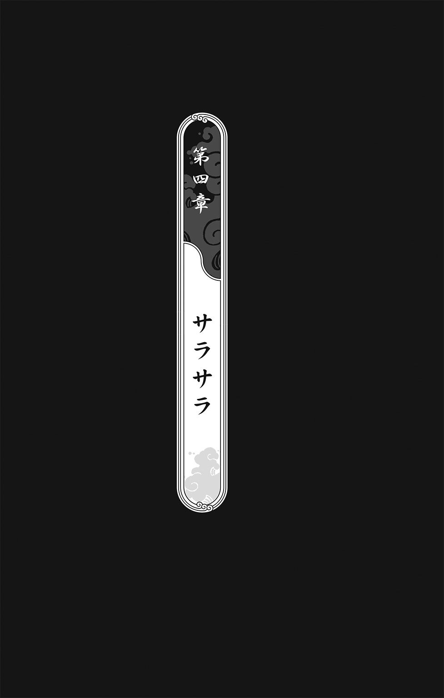
１
「なに見てんのよ？」キョウは照れ隠しに、少しばかり攻撃的になっていた。「あたしだってねえ、こんな服、似合うなんて思ってないんだからね」
「.........」
その逆だった。
宴用にアギトが用意した真紅のドレスは、ツインテールをほどいて長い髪を大人っぽく垂らしたキョウにとてもよく似合っていた。ドレスと同じ色の紅を、うっすらと唇に引いている。真珠の耳飾りが、ちょっとキツめの彼女の表情を、いくぶんやわらげていた。
「まるで別人だな」ついつい本音が出てしまった。「お前って、こんなに綺麗だったか？」
「なっ!?」キョウがボッと赤くなった。「な、な......なに言ってんの、あんた？ バ、バッカじゃないの!?」
「女ってすげェな」
「あ、ああ......あんただって、そんな気障ったらしい背広着てるじゃん」
「これ、なーんか窮屈なんだよなあ」オレはネクタイを緩めた。「慣れねェかっこうは、やっぱするもんじゃねェぜ」
「でも......似合ってるよ」
「......え？」
「似合ってるよ、トウ」
「なーに言ってんだよ、お前らしくもねェ」
「だって......」キョウが上目遣いでモジモジした。「だって、本当だもん」
「や、やめろよ、お前......そんな、お前......」今度はオレが照れ隠しをする番だった。「いやあ......しっかし、あれだな......ふ、ふだんガサツな女がそういうこと言うと、なんか調子が狂っちまうぜ......ナハ、ナハハハハハ！」
「.........」
「馬子にも衣装ってのは、本当なんだなあ！」
ゴンッ！
「へぐっ！」
キョウのエルボーが脳天に炸裂した。どうやらまた、いらないことを口走ってしまったようだ。
「ふだんはガサツで悪かったわね」
「ど、どうもすみませんでした......」
「言っときますけど、こんな衣装なんかないほうが、あたしは何倍もすごいんだから」
「知ってます」
「はあ!?」キョウに胸倉をねじあげられてしまった。「あんた、またお風呂のぞいたわね！」
「いやいやいやいや！ ないないないない！」すくなくともチクが死んでからは、といういらないひと言は、胸のうちにしまっておいた。「てゆーか、お前、それ誘導尋問じゃねェか！ 汚ェぞ！」
「バカなこと言ってないで、ほら、行くわよ」
キョウはオレの襟首を摑んで、招待客がひしめく道影殿の正門へズンズン引きずっていったのだった。
新緑の緑が目にまぶしい午前十一時、空には雲ひとつなく、さわやかに晴れ渡っていた。
どこかで雲雀がさえずっている。
正門で招待状を渡し、身体検査を受けたあと、オレとキョウは殿内にとおされた。丸一年かけて修復した道影殿が、明るい陽射しをうけて輝いている。天守閣を見上げると、本当に十五年戦争が終わったんだという実感が湧いてきた。玉砂利を敷き詰めた広場では、すでに招待客たちが笑いさざめいていた。
オレはさっと四方をあらためた。
お祝いの花がそこかしこに飾られ、立食のための料理がテーブルに並べられている。盆に酒をのせた給仕が、人々のあいだを忙しそうに動きまわっている。
目立たないように正装をしているが、明らかに手練れだと思われる男たちが、要所要所で目を光らせていた。葵ザンキが演説をすることになっている演壇のまわりに配置されているのは、おそらく暗部だろう。額に道隠れの車輪紋様が入った面を着けている。
オレはキョウに目配せをし、人混みから離れ、道影殿のなかへと誘いこんだ。
「これからどうするの、トウ？」
「アギトがむかしの道影殿の青写真を持ってたんだ」
キョウがうなずく。
「それによれば、地下へ通じる階段がある」
「どうして隠し財産が地下にあると思うの？」
「ひとつには、金ってのは重たい。天守閣なんかに隠したら、なんかあったときに持ち出しにくいだろ？」
「あとは？」
「戦で破壊される前の道影殿は、七年かけて造られたらしい。時間がかかったのは、それだけ頑丈に造ったからだ。いまの道影殿はたったの一年で修復した。もしオレが大事なもんを隠すなら、むかしの頑丈な建物のなかに隠す」
「つまり、地下はむかしのままなのね？ もしそこになかったら？」
「べつに」
「べつに？」
「オレらはチクを殺ったやつの手掛かりを探しに来たんだ」オレは肩をすくめ、「あとのことは、どうだっていい。隠し場所が見つかればよし、見つからなきゃ......アギトなんざクソ食らえだ」
「そうね」と、キョウ。「うん、あんなやつクソ食らえよ......で、その青写真は？」
オレはこめかみをコンコンと指でたたいた。
オレたちは道影殿のなかを、ひっそりと駆けぬけた。長い廊下の両側に並んだ扉が、どんどん視界の端からこぼれ落ちてゆく。
人気のない廊下に谺する足音が聞こえ、キョウが体を強張らせる。オレはとっさに彼女の手を摑んで、いったん階段を駆け上がり、踊り場に身をひそめた。汗ばむキョウの手は、びっくりするくらい小さく、やわらかだった。
足音が近づき、また遠ざかる。
詰めていた息を吐くと、また地下への階段を探して、建物のなかを徘徊した。オレとキョウは、しっかりと手をつないでいた。オレはいまとても大切なものを摑んでいるんだ、と思った。
建物の一階部分には、地下へ降りる階段は見当たらなかった。
「ないわね」
「くそ......」
「でも、これではっきりした」
「なにがだよ？」
「隠し財産はやっぱり地下にあるわ」
「なんでそう思うんだ？」
「二階へ上がる階段はあるのに、地下へ降りる階段はない」キョウが言った。「それって、侵入者を地下へ行かせないためじゃん」
「ああ、なるほど」
「落ち着いて、よく思い出してみて。ほかの階から地下へ降りる、隠し階段があるかもしれない」
オレは頭のなかの青写真を眼前に呼び出した。道影殿は三階建てだ。一階一階、細部まで思い出してみた。全ての廊下、全ての部屋、全ての階段を重ねてみる。
すると、おかしなことに気がついた。三階と一階にひとつずつ、黒く塗りつぶされている部屋がある。オレはその二部屋に意識を集中しようとしたが、外のざわめきが大きくなり、思考が寸断された。
「もうすぐ新道影候補の演説がはじまるわ......なんか思い出せた？」
「こっちだ」
なにもわからないまま、とりあえず頭のなかの青写真をたよりに、一階の黒い部屋を目指した。
来た道を引き返した。迷路のような廊下に何度か迷わされながら、オレとキョウはついにその部屋の前までやってきた。
「ここ......トイレだよ？」
「わかってるよ」オレは舌打ちをした。「でも、ここが怪しいんだ......ちょっと見てくるから、お前はここで待ってろ」
キョウを残して、便所の扉を押し開ける。だれもいない。個室が三つあったけど、どれも空っぽだった。
怪しいところは、なにもなかった。
扉の外では、キョウのもの問いたげな顔が待っていた。
「ダメだ......」便所を出てオレは首をふった。「なんもねェ」
キョウがなにか言おうとして口を開きかけたときだった。
突然、ガコンッ、という音が響き渡った。
「！」
続いて、無人だったはずの便所のなかから、人の話し声が聞こえてきた。
ど、どうなってんだ!? とっちらかった頭のなかで、オレはほとんどパニックを起こしかけていた。いまのいままで、だれもいなかったじゃねェか！
便所のドアが押し開かれる。
「！」
ヤベェ、こんなところにいるのが見つかったら――と思う間もなく、キョウがサッとオレに抱きついてきた。
「な、なに......お前、こんなときになにを――」
キョウは唇で、オレの残りの言葉をふさいだ。
「!?」
便所から忍装束を着た男たちが出てくる。
「な、なにやってんだ、お前ら！」ひとりが怒鳴った。「ここは立ち入り禁止だぞ！」
「ケッ、どいつもこいつも浮かれやがって」もうひとりが吐き捨てた。「ここはお前らがイチャついていいところじゃないんだぞ」
「あ〜ら、ごめんあそばせ」オレから唇を離すと、キョウは忍たちに流し目を送った。「トイレを探してたら、迷っちゃったみたいで」
その艶やかさに忍たちどころか、このオレまでドギマギしてしまった。
「さ、さっさと済ませて、出ていけ」
それだけ言うと、忍たちは廊下を歩き去ってしまった。
ふだんなら、こんなところまで入りこんできた不審者を、やつらが放っておくはずがない。道影殿の修復がようやく済んで、気がゆるんでいたのかもしれない。十五年戦争のせいで、使える忍がほとんど死んじまったせいかもしれない。
だけど一番の理由は、たぶん、キョウだ。もしこの世の終わりまで変わらない真理ってやつがひとつだけあるとすれば、それは男のスケベ心だな。
「ちょっと、あんた......」そのキョウが言った。「いつまで抱きついてんのよ」
「ああ......」オレはあわてて身を離し、「ごめん、ごめん」
「クナイを持ちこんだの、トウ？」
「ヘッ？ ク、クナイ？」
「あんたに抱きついたとき、あたしのお腹んところに、なんか硬いものが当たってたから」
「え？ ああ......えーっと、それは......」それはクナイではありません。「そうそうそうそう！ クナイクナイクナイクナイ！ ほ、本当だぞ......クナイ以上でも、クナイ以下でもねェからな！」
「なにあわててんのよ？」
「べ、べつに！」
「よく取り上げられなかったわね」
「あっ！ やっぱ、この便所、どっかに通じてんだよ！」だってクナイじゃないですから。「ちょ......ちょっと、アギトの追跡札を貼ってくっからさ！」
ヘラヘラ笑いながら、へっぴり腰で便所へ入っていくオレを、キョウは怪訝そうに見送った。
ふう、危なかったぜ。
「さてと......」
個室をひとつずつ調べていくと、一番奥のやつに違和感を覚えた。
「......？」
すぐに理由がわかった。ほかの個室には水洗用のタンクがあるのに、一番奥にだけそれがない。
オレは個室のなかを丹念に見回し、それから排水レバーを押してみた。
ガコンッ！
「！」
ゆっくりと沈んでゆく個室から、オレはあわてて跳び退った。個室はどんどん沈み、やがて見えなくなった。
「エレベーターになってやがったのか......」
オレは壁にアギトの追跡札を貼りつけた。こうしておけば、アギトはこの札を追って、ここまでたどり着ける。
もちろん、オレの勘違いってことも、十二分に考えられる。このエレベーターは隠し財産の在処になんか、ぜんぜん通じてないのかもしれない。そんときは――
「くそ......そんときは、そんときだぜ」
オレは便所を出て、キョウといっしょに、陽光が燦々と降りそそぐ前庭に戻った。
「さっきのアレ......ノーカウントだからね」頰を赤らめたキョウが、むっつりと言った。「あんなの、ノーカウントなんだから」
すでに招待客たちが演壇のほうへ集まっていた。
偉そうな年寄りが、壇上でなにか話している。
「――というわけで、我々臨時執行部は、新道影候補を選出するに至った次第であります。本日は道影殿の修復完成披露と、新道影候補の葵ザンキの顔見世のために、このささやかな宴をご用意しました。それでは、大きな拍手をもってお迎えください。葵ザンキです！」
「！」
刮目したオレを、キョウは見逃さなかった。
「なによ、鼻の下をのばしちゃって」
「なっ......べ、べつにのばしてねェし！」
「ふん、ザンキのおっぱいばっかり見てたくせに」
「ううむ、百六センチ......」
「はあ!?」キョウがオレの胸倉をギュウギュウ摑みあげた。「やっぱり見てたんじゃん！」
「いやいやいやいや！ 違う違う違う違う！」
「あの女狐......きっとあのおっぱいで、上層部の連中もたぶらかしたに決まってんだから」
里中に貼られていたポスターには、灰色の冷たい目と顔の刃傷は写っていたけど、その大きな胸は写っていなかったんだ。
万雷の拍手のなか、演壇に上がってきたのは、そんなポスターで何百回も見たことのある女だった。
２
葵ザンキは、淡々と聴衆に語りかけた。その言葉は派手でも豪華でもなかったけど、ありのままで、噓がないように思えた。
「この里は戦で疲弊している。わたしのことを道隠れ至上主義者と呼ぶ者もいるようだが、わたしは戦を好まない。戦は悪だ。完全なる悪だ。しかし、降りかかる火の粉は払わねばならない。道影となるからには、里の全住人の安全と健やかな生活を第一に考えるべきだ。だからわたしは、アカデミーの再興と、忍の再組織化が急務だと考える。組織から離れた忍がいま、この里の治安状況を著しく脅かしている。まずは彼らを組織に戻す。同時に、若い世代の育成にも力を入れていこうと思う」
「あの華奢な顔に騙されちゃダメよ、トウ」キョウが耳打ちをしてきた。「あの女は根っからの戦争屋なんだから」
「.........」
オレはキョウの紅い唇を盗み見た。まだ唇に、彼女の唇のやわらかい感触が残っていた。
「聞いてんの、あんた？」
「あっ......ああ」目をそらす。「だけど、あいつの言うことも、わかんねェわけじゃねェけどな。アギトみたいなやつらは、組織から離れちまったから、ツルんで悪さをしてるわけだろ？」
「あいつは社会のダニよ！」
「元はすげェ忍だったんだぜ。オレやお前だって、戦が激しくなってアカデミーが封鎖されなきゃ、いまごろは中忍くらいにはなってたかもしんねェし」
「わたしは、この里に忍役を導入しようと思っている」ザンキは言葉を継いだ。「九歳になった里人全員に、二年間のアカデミーでの修業を義務づけようと思っている。もちろん、そのまま忍になる者もいるし、そうじゃない者もいる。しかし、忍役によって、里人のひとりひとりに危機意識をきちんと持ってもらい、己の身を守る術を習得してもらいたい」
聴衆のあいだから、拍手が湧き起こった。
「そりゃ、ここにいる年寄りたちはいいわよ」キョウがまたぞろケチをつける。「もう忍役なんて関係ないんだから。でも、子供たちはどうなるの？ 九歳から人殺しの訓練をさせられるのよ」
しかし、さすがのキョウも、自分の言葉がそっくりそのまま大声で叫ばれるとは、思いもしなかったようだ。
「子供たちに九歳から人殺しの訓練をさせるんですか？」その声は突然、聴衆たちのあいだから響き渡った。「それで、里のためにはよろこんで死ぬことを学ばせるんですか？」
ザンキから表情が消え、冷酷な拷問官の顔をのぞかせる。聴衆たちがふりむいたその先にいたのは――
「！」キョウが目を見張った。「......鰆目先生？」
「葵ザンキ......わたしがわかりますか？」鰆目のじじいが言った。その顔は、教室にいるときとはくらべものにならないほど険しかった。「わたしは、あなたに粛清された鰆目ムギの父親です」
「よい！」ザンキは、鰆目のじじいに詰め寄る暗部たちを制した。「迂闊に動くな......鰆目ムギ、元諜報部の鰆目部長か」
「息子はあなたに殺されました」
「.........」
口を開く者は、いなかった。
前庭は、水を打ったように静まり返っていた。
「な、なんで鰆目のじじいがこんなところにいるんだよ？」
「シッ！」オレの質問を、キョウは腕をふって払いのけた。「黙ってて」
「ご子息のことは、残念に思っている」ザンキが静かに言った。「たしかに、彼はわたしの尋問中に命を落とした」
「尋問......拷問の間違いでは？」
「どう呼ぼうと、かまわない......あなたが拷問と呼ぶのなら、それでもいい」
鰆目のじじいは、壇上のザンキをグッとにらみつけた。
「戦は悪だ......もちろん、拷問も悪だ。そして、わたしはこの里の悪を司る者になるつもりだ」ザンキはひと呼吸つき、「あなたのほうから、わざわざ出むいてくれたことに感謝する」
「.........」
「わたしたちは、あなたの行方を追っていた。あなたに殺されたある女の子の日記に、あなたのことが書かれていたのでね」
「日記？」鰆目が目をすがめる。「なんの日記ですか？」
「あなたの教え子の」
「！」
オレとキョウは顔を見合わせた。ザンキは、ミナミの日記のことを言っているんだ。
「鉏篩院を発動する代償として、あなたは教え子たちの命を差し出した」
ザンキがなにを言っているのか、わからなかった。鉏篩院を発動する代償に、教え子の命を差し出したって？ 混乱したオレの頭は、ものを考えられる状態じゃなかった。
ウチらは鉏篩院の契約書にサインをしてしまった――ミナミの声が聞こえたような気がした。
「おそらく、鉏篩院の契約書を盗み出したのは、鰆目ムギだ。そして、あなたは息子からその契約書を託され、発動条件とその代償がなにかを聞いた......違うか？」
鰆目はグッと奥歯を嚙みしめた。
「鰆目ムギは、死ぬ前にこう言っていたよ。『鉏篩院の契約書は燃やした、もう二度とあんな術が使われることはない』と。しかし、あなたは息子から託された契約書を燃やさず、あろうことかそれを使って禁術の発動実験を繰り返した」
「全てはムギの仇を討つためです！」
「最近、巷を騒がせている白い女......あれは、禁術を発動した代償を回収にやってきた、鉏篩院だろう」
「本当なんですか、鰆目先生！」キョウが躍り出た。「先生が......先生がチクやミナミを殺したんですか？ ほかの人たちも？」
「キョウさん......？」鰆目が目をパチクリさせた。「な、なぜ、あなたがこんなところに......」
「答えてください、鰆目先生！」キョウは涙声で叫んだ。「先生がチクを殺したんですか!?」
「息子は......ムギは......」その声は重く、かすれていた。「鉏篩院の発動条件を隠しました......あんな恐ろしい禁術を復活させたくなかったからです。わたしはいつもきみたちに言っていますね、たとえ戦のときだろうと、人間らしい心を失ってはいけない、と。ムギはわたしの教えを守ったんです。油隠れの里は我々の敵だが、敵だって同じ人間だということをわかっていたんです。だから、道影が鉏篩院を使って油隠れの里を殲滅する計画を立てていると知ったとき、絶対に発動条件をだれにも漏らすまいと誓ったんですよ。それを、それを......」壇上のザンキを指さす。「この女が諜報部の全員を拷問にかけて、聞き出してしまったんです！ 息子が口を割る前に、ほかの部員がしゃべってしまいました。それで、道影は鉏篩院を発動して、油隠れの里を殲滅することができたわけです。ムギにできることは、鉏篩院の契約書を盗み出して、わたしに託すことだけでした。わたしはムギを里の外へ逃がそうとしましたが、無駄でしたよ。ムギは逃げませんでした。あんな非人道的な禁術を発動した道影を糾弾するのだと言って、組織へ戻ったんです......そして、葵ザンキに捕まって殺されたんです」
「だから......なに？」見開いたキョウの目は、涙に濡れるふたつのガラス玉だった。「もう戦は終わったのに、なんで......なんで、チクが殺されなきゃならなかったの？」
「わからないんですか!?」鰆目が吼えた。「葵ザンキが道影になったら、もっと多くの罪なき命が奪われるのですよ！ この悪女を倒すためなら、多少の犠牲は仕方がないんです！」
「そんなの、わかんない！」キョウは全身で叫び返した。「あんたはただの人殺しよ！」
「違う！ わたしは、わたしは......」
「そこまでだ」いつの間にか、ザンキが鰆目の背後に立っていた。「お前の身柄を拘束する」
「！」
ザンキが動く。
が、鰆目のほうが速かった。懐から巻物をひっぱり出すと、パッと投げ開き、呪印の真ん中を掌底で突いた。
「出でよ、鉏篩院！」
ドォオオオオオオオン！
「！」
道影殿を揺さぶるほどの爆音が轟き、前庭に集まった客たちをひとり残らず地面に打ち倒した。
「キョウ！」
爆風で吹き飛んだキョウを、オレは抱き止めた。オレたちはもつれ合って、ゴロゴロころがった。
客たちが悲鳴をあげる。
「な、なんだ、あれは!?」全員が空中を見上げて、指さした。「ふ、篩か......？」
「見ろ、でっかい篩が道影殿の上に浮かんでいるぞ！」
みんなの言うとおりだった。
日光をさえぎり、道影殿をすっかり翳らせてしまうほどの巨大な鋼鉄の篩が、空に浮かんでいた。
それだけじゃない。
「!?」
篩の彼方に、巨大な人影が、まるで霞のように揺らめいている。オレの目には、それが篩を手に持っている女の姿に見えた。頭には二本の角があって、赤い目と黒い牙を持った鬼婆に。
ほとんど透明の鬼婆は、小山ほども大きい。鳥たちが、その体を貫いて飛んでゆく。どうやら、鳥たちには鬼婆が見えていないようだった。
鬼婆が篩を道影殿にむかってひとふりした。
「！」
道影殿の一角がえぐれた。
鬼婆がえぐり取った建物を篩にかけると、鉄筋やコンクリートの塊がサラサラの砂になって前庭に降りそそいだ。
西の愚公移山、東の鉏篩院。オレの頭のなかで、凶暴な声がいくつも叫んでいた。鍬と篩、そりゃいったいどんな術なんだい？ 油隠れの里がもとあった場所は、いまや砂漠になってて、草木一本生えやしねェんだぜ――
招待客たちが悲鳴をあげて、我先に逃げ惑った。
鬼婆が篩をふる。
人間の体ごと、正門が根こそぎすくい取られ、サラサラの砂となって風に吹き流された。
「うわあああああ！」悲鳴が轟いた。「ふ、篩が襲ってくるぞ！」
こいつらにも、あの鬼婆が見えてねェのか!?
「キョウ！」オレは地面にへたりこんで放心しているキョウをどやしつけた。「オレらも早く逃げ......」
が、オレは、そのままハッと息を吞んだ。葵ザンキと対峙した鰆目が、印を結んでいる。その腰帯には巻物が――鉏篩院の契約書が差しこまれていた。
「！」
それは、鰆目がいつかオレらに血判を捺させようとした――鰆目学校の存続を訴えるための、あの巻物に間違いなかった。
３
鰆目が気合もろとも印を結ぶと、鋼鉄の篩がザンキに襲いかかった。
ザンキは地面を蹴って跳び、空中で初撃をかわす。
「ふんっ！」
鰆目はすかさず印を結び直す。
すると鬼婆がくるりと篩を返し、後ろ手にザンキにむかってひとふりした。この一撃で、ザンキの胸がはだけた。
「！」
が、彼女はこぼれた大きな胸のことなど気にも留めないばかりか、こんなものは邪魔なだけだと言わんばかりに舌打ちをした。
印を結び、術を発動しようとする。
篩のほうが速かった。
ブンッ、と風を切る音がしたと思うと、ザンキが風圧に吹き飛ばされた。それだけではない。篩は彼女の左腕を持っていってしまった。
「!?」
地面に降り立ったザンキは、どうにか体勢を立て直す。ちぎれた腕の付け根からは、ひどく血が出ていた。苦しそうに片膝をつく。
暗部の連中がすかさず彼女を背中に隠し、戦闘態勢を取る。
「やめろ......」ザンキは部下たちを制した。「お前たちが敵う相手ではない」
「どうですか、拷問にかけられる味は？」鰆目が冷笑した。「すぐには殺しませんよ、葵ザンキ。お前にもムギが味わった苦しみを、たっぷり味わわせてやります」
逃げろ！ こいつらが殺り合ってるこの隙に、逃げるんだ！ 頭ではわかっていたけど、キョウを支えていたオレは、ふたりのやりとりから目が離せなかった。
「鉏篩院を発動する代償は......」ザンキがうめくように言った。「やっぱり、その契約書に血判を捺した者たちの命なんだな」
「そんなことは、とっくに調べがついているはずですよ」
「確信はなかった......諜報部もそこまでは摑んでいなかったからな」
「ムギは知っていましたよ」
「！」
「あなたの拷問に屈しなかっただけです」鰆目が勝ち誇ったように言った。「先代の道影はそのことを知りませんでした......血判を集めなければ、術者の血縁者が連れていかれるということを」
いま、なんて言ったんだ？ オレは耳を疑った。鉏篩院を発動する代償が、あの巻物に血判を捺したやつの命だってのか？
キョウを見やると、キョウが涙に濡れた目で見つめ返してくる。
「キョウ......お前、血判を捺したのか？」
答えはわかっていたけど、たしかめずにはいられなかった。あの日、キョウは率先して血判を捺そうとした。アギトのところへ行くオレを追ってこなかったら、一番に捺していたはずだ。
キョウはなにか言おうとしたけど、唇を震わせるばかりで、言葉は出てこなかった。
オレは鰆目をにらみつけた。
腹の底から、ドス黒い怒りが、マグマのように脳天を衝き上げた。
気がつけば、はじかれたように飛び出していた。
「ト、トウ!?」
前庭に敷かれた玉砂利は、すっかり砂にうずもれていた。その砂は、数分前まで建物や、樹や、そして人間の体だった。
標的をにらみつけたまま、オレは砂をすくって突進した。
「鰆目っ！」
ふりむいたやつの顔に、砂をたたきつける。
「うわっ！」
目を閉じてひるんだ一瞬の隙を衝いて、オレは腰帯から鉏篩院の契約書をひったくってやった。それは、オレがこれまでやったなかで、一番乱暴なかっぱらいだった。
「ぐぬうう......そ、それを返せ」
「ヘッ！ 返せと言われて返すバカがいるかよ！」オレは攻撃に備えて、腰をぐっと落とした。「かかってこいよ、じじい、このヤイバ様が相手になってやるぜ！」
が、鰆目は動かなかった。なにかにおびえたように、上空を見上げた。
真昼の陽射しを受けてギラギラ輝いていた篩が、すうっと消えていく。
「!?」
戸惑ったのは、オレだけじゃなかった。暗部たちも、そしてザンキも、なにが起こったのか、まるでわかっていないようだった。
真っ先に動いたのは、鰆目だった。地面に煙玉をたたきつけた。ボンッ、と爆音が轟き、白い煙幕がやつの姿を隠す。
くそ、逃げられた！
煙が晴れると、鰆目の姿はもう影も形もない。そのかわり、白い着物を着た女がひとりいた。
その顔に表情はなく、まるで面をかぶっているみたいだった。額に、ちっぽけな赤い宝石のようなものが光っていた。あの子守唄が、かすかに聴こえてくる。すぐに女が鼻唄を歌っているのだとわかった。
「！」
オレは目を見張った。女の帯紐は、先っちょのほうがちぎれていた。死ぬ間際に、チクにむしり取られたに違いない。
こいつが......体のなかで血が滾った。こいつが、チクを殺ったんだ！
「に、逃げろ！」葵ザンキが叫んだ。「それは鉏篩院の回収係だ！」
「......え？」
「契約書に血判を捺した者の命を回収しに来たんだ！」
「！」
あっけに取られているうちに、白い着物の回収係が影のように動く。鼻唄を歌いながら。そのむかう先には、地面にへたりこんだキョウがいた。
回収係が青白い腕をのばす。
キョウは動けない。
落ちていたクナイを拾い上げると、オレはふたりのあいだに割って入った。
「逃げろ、キョウ！」
怒鳴りつけながら、回収係にクナイを突き刺した。
陽炎のように揺らめく回収係。クナイをかわし、その切っ先にチョンと指先で触れた。
「!?」
クナイが砂になって、サラサラとオレの手からこぼれ落ちていった。
「くそっ！」素早く印を結ぶ。酉、巳、申、辰。「火遁・火廻！」
ゴォオオオオオオオオ！
至近距離から業火を吐きつけてやったけど、やつにはそよ風ほどにも効かないようだった。
「ダメか！」
キョウを肩に担ぎ上げると、オレはできるだけ遠くに跳び退った。
が、影のようにのびた回収係は、すでに着地点に先まわりしている。
「チイッ！」
オレは空中でキョウをぶん投げた。
キョウが小さな悲鳴をあげる。
回収係の腕がキョウのドレスを切り裂く。すると、そのスカートの部分が砂になって、パラパラとこぼれ落ちた。
「！」
キョウの太腿があらわになる。
回収係はもう、次の攻撃体勢に入っている。キョウがとっさにのけぞる。青白い腕が彼女の胸元で一閃した。
砂と化すドレス。
「キャッ」
キョウの胸がこぼれた。
「ナ、ナイス！」思わず本音が出てしまった。「あ、じゃなくて......気をつけろ、キョウ！」
「遅いわっ！」胸元を隠しながら、キョウががなった。「覚えときなさいよ、トウ！」
「こいつに触られんな！」オレはあわてて言い直した。「チクみたいになっちまうぞ！」
片腕で胸を隠しているキョウは、しかし、思うように身動きがとれない。
「逃げろ、キョウ！」
「そ、そんなこと言ったって......」
一瞬のことだった。下から突き上げた回収係の腕が、ドスッ、と彼女の裸の胸を貫いた。
「!?」
キョウの目が見開き、そして、ゆっくりとくずおれる。
「キ......キョウ！」
オレの絶叫を、爆音がかき消した。
ボンッ！
「!?」
体を刺し貫かれたキョウが、白煙となって雲散した。
「ここよ、トウ！」本体はすでに外壁の上にいた。「そっちは分身！」
が、胸を撫で下ろす暇もなく、回収係がすうっとキョウのほうへ漂ってゆく。
壁を蹴って跳び上がるキョウ。
「こぉのおおおおおお！」
回収係に落とされたキョウのかかと落としは、しかし、地面を打っただけだった。
玉砂利が舞い散り、地面にボコッと亀裂が走る。
敵は、風に揺れる柳のように、キョウの背後にまわりこむ。
すかさず数人の暗部が、回収係を取り囲んだ。目配せをし、いっせいにかかっていく。
が、回収係はクナイを持った敵のことなど、まるで眼中にない。攻撃をかわしながらも、その無表情な顔はキョウにむけられていた。
「ザンキさん！」オレは声をふり絞った。「契約をなかったことに......契約をなかったことにゃできねェのかよ！」
暗部の攻撃をすりぬけた回収係が、一直線にキョウのほうへ漂ってゆく。
「お前の血で彼女の名前を塗りつぶすんだ！」ザンキが叫び返した。
「！」
「しかし、今度はお前が狙われるぞ！」
「ヘッ......上等よ！」
オレは迷わず鉏篩院の契約書を投げ広げ、親指の腹を嚙み切った。
「やめて、トウ！」攻撃をかわしながら、キョウがわめいた。「そんなの、絶対にダメェ！」
「言ったろ？」オレは親指の血でキョウの名前を消した。「お前はぜってーにこのオレが守ってやんだ」
キョウの名前にオレの血が、まるで流砂のように吸いこまれてゆく。たちまちキョウの名前が消え、真っ赤な血だけがあとに残った。
と、キョウにのびかけていた腕がピタッと止まり、回収係の無表情な顔が、まるでぜんまい仕掛けのようにオレのほうをむいた。
「こっちに来いよ、今度はオレとイチャつこうぜ！」
白い着物をはためかせ、子守唄を引きずりながら、亡霊のように飛んでくる回収係。
「！」
オレは頭を下げてやつの腕をかわし、体をそらせてその鋭い爪から逃れた。バク転で間合いをあけ、砂をすくい取って投げつける。
まるで効かねェ！
横合いから暗部が、太刀をふりかぶって切りかかる。
「死ねっ！」
回収係が腰を落として、そいつの胸を軽く突いた。すると、人間の体がサラサラの砂になって、風に吹き流された。
「トウ！」
「来んな、キョウ！」オレは怒鳴り返した。「こいつの標的はオレだ！ 手出しさえしなきゃ、ほかのやつが狙われることはねェ！」
「で、でも！」
「でももクソもねェ！」下からの突きを、体をそらせてかわす。「たのむから、一度ぐらいオレの言うことを聞きやがれ！」
間合いを読み損ね、やつの爪がオレの耳をかすめた。
「!?」
痛みはなかったけど、手で触れると、そこにはもう耳はなかった。砂がオレの顔から流れ落ちていく。
うろたえたオレは、致命的な過ちを犯してしまった。奇声をあげて、自分から敵に殴りかかっていっちまったんだ。
回収係が、少し笑ったように見えた。
次の瞬間、やつの爪がオレの胸に突き刺さった。
「トウ！」キョウが絶叫した！ 「トウォオオオオオ！」
オレは膝から崩れ落ちた。
白い着物が背をむけて遠ざかる。鼻唄を歌いながら。まるでオレの生き死になどどうでもよくて、ただやらなければならないことをやっただけだ、とでも言っているみたいだった。
が、オレの体は砂になりもしなければ、チクみたいに真っ白な死体になることもなかった。
鼻唄がやむ。回収係がふりむき、無表情な顔を少しかしげた。
「......？」
オレはやつに突かれた胸に、触れてみた。背広の胸ポケットになにか入っている。取り出してみると――
「！」
オレの手のなかで、チクのかえる板が、サラサラの砂になった。背広に着替えたとき、胸ポケットに入れていたことを、すっかり忘れていた。
「チク......」オレはギュッと砂を握りしめた。まるでチクをこの手に摑んでいるみたいだった。「オレをたすけてくれたのか、兄弟？」
感傷に浸っている暇はない。
回収係がグンッと眼前に迫る。心なしか、その顔に苛立ちが現れているみたいだった。その証拠に、やつはもう歌っていなかった。
オレは立ち上がろうとしたけど、踏ん張りがきかない。あまりのショックに、脚が麻痺したみたいになっていた。
「!?」
「トウ、なにやってんのよ！ 早く逃げなさいよ、トウ！」
ゴウッ、と風を割って、回収係が腕を突き出してくる。
しかし、死を司るやつの腕が、オレに触れることはなかった。ボコッ、と地面が陥没した次の瞬間、なにかが地面の下から飛び出してきたんだ。
ドッゴォオオオオオオン！
オレは目を見張った。
その毛むくじゃらの巨大な生き物は、三階建ての道影殿とほとんど同じ身の丈だった。
そいつが鋭い爪を一閃させると、オレを殺そうとしていた回収係の体が四つに裂けた。
「!?」
一瞬のことで、なにが起こったのか、まるでわからなかった。
サラサラと砂に還ってゆく回収係を、オレは口をあんぐり開けて見つめた。
「トウ！」キョウが走ってきて、オレの首っ玉に抱きつく。「大丈夫、トウ！ やられなかった!? ああ......あんた、耳が......耳が......」
「大騒ぎすんな......耳のひとつやふたつ、どってことねェ」
「でも！」
「大丈夫、お前の声はちゃんと聞こえてっからよ」
「礼ならいらないぜ」土煙のなかから声がした。「これで貸し借りなしだ、八重歯」
「......！」
もうもうたる砂塵のなか、巨大な土竜の頭の上に、胡坐をかいたアギトが仙人のようにふんぞり返っていた。
「こいつはオレの口寄せ獣、土々逸ってんだ」アギトが言った。「お見知りおきを」
土竜の土々逸が、キーキー、鳴いた。
「あ、あんたは......アギ――」オレはあわててキョウの口をふさいだ。「んんんん......なにすんのよ！」
「黙ってろっ」
それというのも、アギトの頭には黄金の兜が光っていたからだ。胸には宝石をちりばめたネックレスを幾重にも巻きつけ、指にも金銀の指輪が光っている。
「まったくよぉ......」ニヤリと笑ったアギトが、まるで花札のように小判を広げて見せた。「子分どもを食わせていくのも、楽じゃねェぜ」
なるほどな......やつの笑みが、オレにも伝染する。道影の隠し財産を、首尾よくいただいちまったってわけか。
茫然としているキョウを後目に、アギトを乗せた土々逸は、また地響きを轟かせて地面にもぐりこんでしまった。
気がつけば、オレとキョウは忍たちに取り囲まれていた。
４
招待客は、ひとり残らず避難したあとだった。
破壊をまぬがれた宴の名残り――演壇や花やテーブルの料理――が、ひどく色褪せて見える。
鉏篩院にえぐり取られた道影殿から、瓦礫が崩れて落下した。
「なんだ、いまの口寄せ獣は？」部下に羽織をかけられた葵ザンキが、ゆっくりと近づいてくる。自分で止血をしたのか、ちぎれた腕からはもう血が出ていなかった。「きみのことを、八重歯と呼んでいたようだが」
オレはキョウを背中に隠し、じりじり狭まる包囲網をにらみつけた。
「ち、違います！」キョウがしどろもどろになって声を張りあげた。「彼は八重歯なんて名前じゃありません！ 調べてもらえば、すぐわかります！」
「きみたちは、先代様の財宝を盗みにやってきたんだな？」
オレは上着を脱ぎ、キョウの剝き出しの両肩にかけてやった。
「あの口寄せ獣を操っていたのは、貉アギトだろ？」ザンキは静かに言葉を継いだ。「隠さなくてもいい......あの男は元暗部だ。それがいまや、コソ泥に身をやつしてしまったか」
オレとザンキの視線がぶつかって、はじけた。
「ヘッ！」
ザンキが目を細める。
「バレちまっちゃ、しょうがねェ」オレはどっかり胡坐をかいた。「オレも男一匹よ、逃げも隠れもしねェ！ さあ、煮るなり焼くなり、好きにしやがれ！」
ゴンッ！
キョウの鉄拳が脳天にふり降ろされた。
「あんたねえ......なにかっこつけてんのよ！」キョウは、気絶しかけたオレの胸倉を摑みあげて揺さぶった。それから、ザンキに訴えかけた。「あたしたちは関係ないんです！ あのヤクザ者に脅されて、無理矢理協力させられていただけで――」
「その件は、とりあえず後まわしだ」
「.........」
「さあ」ザンキが腕を差し出す。「鉏篩院の契約書を渡してもらおう」
「......！」
「きみが持っていても、仕方のないものだ」
「だいたい......」オレは乾いて粘つく口を開いた。「鉏篩院ってのはなんなんだよ？」
「むかし......六道仙人の時代に生きていた、桶屋の女房だと言われている。彼女自身も働き者で、いつも鍬を持って畑を耕していた。類まれなる美貌の持ち主だったせいで、好色者の領主の目にとまった。領主は彼女の夫を殺し、彼女を妾として召しあげた。彼女を取り返そうとした父親も、彼女の目の前で斬首された。彼女は悲しみのあまり、ある日、篩に鉄線をしこんで城に持ちこみ、それで領主の首を落とした」
「！」
「そして、自害した」ザンキはひと息つき、「それから、人々は彼女のことを鉏篩院と呼ぶようになった」
「かわいそう......」キョウが目をしばたたいた。「そんな悲しい話があったなんて」
「彼女の魂は妙神山へ飛び、そこで何千年も修業を積み、ついに鬼になったと言われている」
「鉏篩院か......」オレの声はかすれていた。「どうやら契約書の持ち主が替わると、術はいったん解除されるらしいな」
「そのようだな」
「そんで術が解除されたら......」オレはやつから目をそらさずに言った。「あの薄気味の悪ぃ回収係が出てきて、術を発動した代償を清算する......そうだろ？」
「契約書を渡せば、きみらが貉アギトの計画に加担したことは、忘れてやろう」
「......！」
「ほ、本当ですか！」キョウが色めき立った。「ほら、なにやってんのよ？ そんなもん、あんたが持っててもしょうがないでしょ......さっさと渡しちゃいなさいよ！」
オレは懐から契約書を取り出し、それをザンキに放った。
同時に印を結び、術を繰り出す。
「火遁・火廻！」
オレの口から噴出した火炎が、空中の契約書を捉えた。
ザンキが目を剝く。
鉏篩院の契約書は、やつの目の前で焼け落ちていった。
「キャアアアアアア！」キョウが頭をかきむしった。「な、な......なにやってんの、あんた!? なんてことしてくれてんのよ!?」
もしここでザンキが口を開かなかったら、またぶん殴られていただろう。
「どういうつもりだ？」
「オレはアギトの計画に加担した」
「.........」
「処罰したきゃ、しろよ......だがなあ、あの契約書をあんたに渡すわけにゃいかねェ」
キョウが目を白黒させながら、オレとザンキのやりとりを見守っていた。
「オレは頭が悪ぃから、むずかしいことはよくわかんねェ」オレは言った。「だけど、あんたと鰆目のじじいが同じタイプの人間だってのはわかる......あんたらは大義名分さえありゃ、平気で人を殺せるんだ。そんなやつらにゃ、この契約書はぜってーに渡さねェ」
ザンキの目が鈍く光り、オレはなにかを覚悟する。
だけど、次の瞬間、次期道影候補の目がふっと和らいだ。
「この里にも、まだきみのような少年がいたのか」そう言って、かすかに笑ったんだ。「契約書を燃やしてくれたことに感謝する」
「......へ？」
「わたしもきみと同じことをするつもりだった......しかし、里の上層部はそれをけっして許さなかっただろう。せっかく手に入れた強力な戦力だからな。あの契約書は、この世に存在してはいけないものなんだ。きみが燃やしてくれたおかげで、わたしは厄介な仕事をせずにすんだよ」
オレは強くうなずいた。
「しかし、それだけではないのだろう？」
「......？」
「きみは恋人を危険な目に遭わせた術を、許せなかったんだろ？」
「なっ！」
な、なに言ってんですか！ オレとキョウはいっしょになって否定した。こ、ここ、恋人だなんて......ぜんぜん、そんなんじゃありませんよ......もう、ぜんぜんぜんぜん！ そうっすよ、ぜんぜんそんなんじゃねェし......オレはもっとボンッキュッボンな女が好みなんすから......なんですってぇ、もっぺん言ってみなさいよ！
「だが、契約書を燃やしても、契約は解除されない」
ザンキがそう言うと、キョウの拳が止まった。
「わたしの調べたところでは、あの回収係は妙神山の修験者だ。鉏篩院の回収係を二千年勤めあげたら、霊験を得て次の修験段階へ進むことができる。やつらはたとえ下界で致命傷を負ったとしても、霊峰の精気が癒してくれるという」
「てことは......」オレはゴクリと固唾を吞んだ。「あいつはまた現れるってことか？」
「きみの命を回収するまで、何度でも現れるはずだ」
「そんな！」キョウが叫んだ。「なにか......なにか契約を無効にする方法はないんですか!?」
「どんな契約も、ある一定の条件を満たせば無効にすることができる......ただ、いまのところ、だれもその条件を知らない」
「！」
「せいぜい気をつけることだ。鉏篩院の回収係だけでなく、鰆目もきっときみたちを狙ってくる......彼はきみたちがまだ契約書を持っていると思っているからね」
「そんな顔すんなよ......」オレはキョウに笑ってみせた。「オレなら大丈夫さ、このヤイバ様がこれしきのことでやられるわけねェだろ」
「でも！」
「もしもきみたちが鉏篩院を無効化するための条件を突き止めてくれたら、先代様の財産強奪の件は不問にしよう」暗部を引き連れて歩き去る前に、葵ザンキはそう言った。「あの財産はもともと、そのために使われるはずだったのだから」
１
家に帰り着くや、キョウはオレの顔を半分ほど、包帯でぐるぐる巻きにした。
「大げさだって......」
「動かないっ！」
「.........」
陽はすっかり落ち、東の空には大きな月がかかっていた。やさしい春風が開け放った窓から吹きこみ、包帯を巻くキョウの髪をゆらめかせる。
それを見ていると、心から彼女のことが愛しいと思えた。長い、本当に長い一日だったんだ。
「はい、これでよし......とりあえず、消毒だけはしといたからね」
「うん」
手で触れてみると、左の耳が本当に消えてなくなっていた。溜め息が漏れた。すると、キョウの顔が不安に翳った。
「痛い、トウ？」
が、彼女の声は、文字どおりオレの耳に入らなかった。
鉏篩院の回収係がまた襲ってくる。そう考えただけで、わあっと叫んで逃げ出したくなった。
今日はたまたまアギトがたすけてくれたけど、二度目はそういうわけにはいかないだろう。
ちくしょう、いったいどうすりゃいいんだ......？
そのことに心を奪われていたせいで、キョウが夕餉の支度をはじめたことにさえ、まったく気がつかなかった。
まな板をたたく包丁の規則正しい音が乱れ、オレは台所を見やる。
泣き声を押し殺しながら、キョウは野菜を切っていた。
「もうすぐだからね」彼女は洟をすすり、陽気に言った。「今日は美味しいものをつくったげるからね」
「ああ」
どうしたらいいのか、まったくわからなかった。
それでも、キョウの悲しげな横顔を見ていると、自分がなにをすべきなのかが、すとんと腑に落ちた。
キョウがオレのためにこしらえてくれたのは、一杯のラーメンだった。
「.........」
「むかしさ......戦が激しくなる前に、よくチクといっしょに三人で食べに行ったじゃん」キョウは少し照れくさそうで、「前にチクがさ、トウがラーメンを食べたがってたって言ってたの思い出したから......いまは麵なんか手に入らないからさ、小麦粉をちょっとずつ節約して、自分で打ってみたんだ」
オレは熱々のスープに沈んだ、不ぞろいの麵を見下ろした。ネギのかわりに、キョウが摘んできたフキノトウが入っていた。チャーシューなんかもちろんないけれど、煮玉子が一個丸ごと入っていた。
「食べてみて」
「でも......」オレはキョウをふりむいた。「お前のぶんは？」
「あたしはいい」キョウがにっこり微笑った。「お腹、ぜんぜん減ってないもん......ね、冷めないうちに食べてみてよ」
「.........」
どんぶりを持ち上げ、スープを一口飲む。
それから、麵をすすった。
「どう？ 美味しい？」
「うん......うん」
オレは何度もうなずきながら、ラーメンを口に運んだ。ガツガツ食ってないと、涙が出ちまいそうだった。
キョウはラーメンを貪るオレを、ニコニコしながら眺めていた。悲しみに押し流されないように、必死でニコニコしていた。
その夜のラーメンは、むかしオレたちがよく行った三楽の味とはぜんぜん違ったけど、世界中のどんなラーメンよりも美味かった。
「ぷはあ！」スープまですっかり飲み干すと、オレはその勢いで立ち上がった。「ごっそさん！」
「お粗末さまでした」
「さあて、ちょっくら腹ごなしに散歩でもしてくっかな」
「.........」
「すぐに帰ってくっからよ」オレはふり返らずに、玄関扉を開けた。「ちゃんと戸締りだけはしとけよ」
「噓つき」
「.........」
「もう帰ってこないつもりでしょ？」
「な、なに言ってんだよ、お前......」オレは歯を食いしばり、ちゃんと笑顔をつくってからふり返った。「ちょっと散歩に――」
キョウがオレの腕のなかへ飛びこんできた。
「！」
「行っちゃヤだ！」キョウはオレの胸にすがりついて、まるで子供みたいにわんわん泣いた。「あたしをひとりぼっちにしちゃヤだ！」
「だから、ちょっと散歩に行くだけだって......」
「噓つき！」泣き腫らした目で叫ぶ。「いっしょにいたら危ないから......だから......だから、トウは出ていくつもりなんでしょ！」
「.........」
「トウはいつだってそう！ 自分でなんでもかんでも決めて......あたしの......あたしの気持ちなんかちっとも考えてないんだから！ あたしは......あたしはトウといっしょなら怖くない！ トウがいてくれるから、あたしはあたしのままでいられるの！」
なにかが、オレのなかではじけた。
絶対にやっちゃいけないことを、やってしまった。どんなことがあっても隠しておかなきゃならない心を、さらけ出してしまった。
キョウの細い体を――オレは抱きしめた。この世の悲しみを、丸ごと抱きしめているみたいだった。
「わかってくれよ、キョウ......」彼女の髪の香りを、胸一杯に吸いこんだ。「オレといっしょにいたら、お前まで巻き添えを食っちまうんだ」
「じゃあ、いっしょに逃げよっ！ ね、そうしよ！」
「そんなわけにゃいかねェ」
「どうして!?」
「鰆目のじじいを......チクの仇を取らなきゃなんねェ」
「！」
「オレらは三人で一人前だ」オレはキョウの泣き濡れた瞳をのぞきこんだ。「もしここでお前と逃げちまったら、オレは......オレはオレじゃなくなっちまう」
彼女はオレの胸に顔をうずめて、ひとしきり泣いた。
どれくらい、そうしていただろうか？
まるで木の葉が枝から落ちるように、彼女はオレから体を引き離した。
「キョウ......？」
オレを見つめながら、キョウはゆっくりと着物を脱いでいった。
「な......なにやってんだよ、お前？」
「夾竹桃には、毒があるの」
「.........」
「でも、薬にもなる......空気だってきれいにしてくれる」肩からはらりと着物が落ちると、彼女のなめらかな体が現れた。「あたし、いつも思ってた......トウ、あんたがいつもあたしたちの空気をきれいにしてくれてるって」
「！」
オレは、ゴクリと唾を吞む。
その瞬間、世界にはなんの悩みもなく、芳しい花香が満ちていて。
月明かりの下で見る彼女の体は、青白い炎を内側に宿しているみたいだった。長い髪が、胸を隠している。その下で、彼女の心臓も、ドキドキしているのがわかった。
そう、オレと同じように。
「いいのか......？」
「そのかわり......」目に涙をたたえた彼女が、こくんとうなずく。「痛くしたら......ぶっ飛ばすから」
オレは彼女の細い腰を抱き寄せ、唇を重ねた。
また彼女が、ボンッ、とはじけて消えちまうんじゃないかって思ったけど、そうはならなかった。
彼女は、オレの口づけに応えてくれた。オレの切れた唇に、不器用に、だけどやさしく、キスをしてくれた。
オレの腫れてふさがった瞼に唇をつけ、熱っぽいオレの額に額を押し当て、包帯の上からなくなった耳を撫でてくれた。
震える彼女を、オレはそっと横たえた。顔にかかった髪をそっとかき上げてやる。とてもいいにおいが、鼻先をよぎった。
腹に手を置くと、彼女の唇から「あ......」という小さなうめきが漏れた。
「怖いか......？」
「ううん......平気」
「本当にいいのか......無理してんじゃ......」
「無理なんか......してない」
「.........」
「あたしは......あたしは、こうしたいの」
オレが笑いかけると、彼女も泣き笑いになった。
彼女は手をのばし、オレの頰にそっと触れた。
「でも、ひとつだけ約束して」涙目で、そう言った。「お願いだから、死なないで......絶対に、絶対に、帰ってきて」
オレはキョウを見つめた。
手を下のほうへのばすと、キョウが目を閉じた。
着物を摑んで、彼女の体にかけてやった。
「トウ......？」
「この続きは、オレが帰ってきてからだ」オレは彼女を抱きしめた。「心配すんな、ぜってーに帰ってくるからよ」
キョウがまた泣いた。
オレはとても大切なものを、いつまでも、いつまでも、この腕に抱いていたかった。
２
襲撃は、二日後の真夜中だった。
不吉な風が転がるように吹きつけ、草木をザワつかせていた。夜啼き鳥が、おびえたように啼いている。異形の者がだれかを真っ白な死体に変えるには、もってこいの夜だった。
三日月が西の空に傾きかけたころ、白い着物が幽霊のように窓の外をよぎった。
来やがった！
オレは闇のなかで、息を殺して、次に起こることを待ち受けた。
玄関扉がガタガタッと音を立て、それから静かになった。
どこかで犬が吠えた。
戸口の下からすうっと刃物が挿しこまれると、扉が開かないように押さえておく心張棒が、カランと音を立てて土間に転がった。
その音がいやに大きく感じられた。
玄関扉が押し開かれる。
白い着物を着た人影が、するりと家のなかへ入ってきた。頭にほっかむりをしているから、顔は見えない。あたりを素早くうかがい、オレの寝床を見つけると、部屋のなかへ躍り上がった。
頭からふとんをかぶって眠っているオレの上に、黒い影が落ちる。呼吸を整えるための間があった。
太刀を持った腕がゆっくりと持ち上がる。闇のなかで白刃が鈍く光り、ドスッ、とオレの体を刺し貫いた。
「!?」
狼狽する敵に、オレは考える暇を与えなかった。
「おらあああ！」天井板を割って飛び降りたオレは、敵にクナイをたたきつけた。「もらった！」
「！」
敵はとっさにバク転で、オレの初撃をかわす。その拍子にふとんがめくれ、オレが人の形に整えておいた枕が蹴散らされた。
暗い部屋のなかで、オレは敵と対峙した。
敵の顔は、ほっかむりをした手ぬぐいの陰に沈んでいた。
「それで変装してるつもりかよ」クナイを構えながら、オレは声を押し出した。「ええ？ 鰆目先生よお」
「！」
「もしあんたが回収係なら、壁なんか通り抜けられんじゃねェの？」
一拍の間のあと、鼻で笑う音がした。
「そのとおりですよ」
オレは目をすがめた。
「回収係がきみを殺す前に、契約書を返してください」鰆目はほっかむりを取った。「あれは、きみが持っていても意味がありません」
「これか？」オレは懐から巻物を取り出した。「ほしいなら、力ずくで奪ってみやがれ」
「......！」
「あんたのことは気の毒に思う」オレは言った。「オレやキョウやチクだって......いや、鰆目学校に通ってたやつらはみんな、あの戦で大切な人を失ってる」
「知ったふうな口をきくな！」
声を荒らげた鰆目に、オレは度肝を抜かれた。
「敵に殺されたのなら......まだしも諦めがつく。あれは戦だったのだから......しかし......しかし、息子は味方に殺されたんです！ 心から信頼していた組織に裏切られ、命を奪われたんです！ ムギがどんなにツラかったか......」
「チクやミナミも、あんたのことを信頼してたんだぞ」
「！」
「もちろん、キョウもな」オレは奥歯をギュッと嚙みしめた。「あんたの言葉を信じて、あんたが自分たちを騙すはずがねェって信じて、鉏篩院の契約書とも知らずに血判を捺した......そんなやつらの......そんなやつらの気持ちを考えたことあんのかよ、ああ!?」
「うわああああ！」
鰆目が太刀を打ちこんでくる。
ひどい動揺が太刀筋にあらわれ、どこもかしこも隙だらけだった。
オレはクナイで受けた。
刃と刃がぶつかって、火花を散らす。
「きみになにがわかる！」鰆目が吼えた。「葵ザンキが道影になったら、この里はまた戦をやるんだぞ！」
「戦はなくなんねェ！」オレはクナイで、やつの太刀をはじき返した。「なんでかわかるか!? あんたみたいなやつらの悲しみが集まって、どんどん大きくなって......そんで葵ザンキに取り憑いて復讐をさせるからさ！ どんな立派な大義名分があろうがなあ、戦の本当の理由ってのは復讐なんだよ！」
「！」
そのまま二手、三手と打ち合った。闇に火花が飛び、金属のぶつかり合う音が谺した。同時に打ちこみ、同時に跳び退る。
「オレはバカだから、上手く言えねェけどよ......」オレは呼吸を整えながら、やつをにらみつけた。「戦ってのは、一部の偉いやつがやろうって決めてできるもんじゃねェんだ......あの戦のときだって、里中が油隠れのやつらをぶっ殺したくてウズウズしてた。オレだってそうだったよ」
「それはきみらが道影の噓を信じたからでしょう......戦に負ければ油隠れの里はわたしたちを奴隷にしてしまう、男は殺され、女は慰みものになってしまう――」
「油隠れのやつらの頭にゃ角が生えてて」オレはかぶせた。「口にゃ牙があって、子供の肉が大好物ってやつだろ？」
「.........」
「ああ、オレもそんな噓を信じてたよ。だけど、戦のとき、それが噓だって言ってくれた大人はひとりもいなかったぜ。あんたはどうだ？」
鰆目が目を剝く。
「オレはいまだってオヤジを殺したやつらが憎い」オレは言った。「油隠れの里はもう存在しねェけど、次にまたどっかの里と戦が起こりゃ、オレは敵を油隠れのやつらと思って戦うかもしんねェ。オレのオヤジを殺さなかったやつらに、復讐しちまうかもしんねェ......オレらのそういう感情があるかぎり、いずれまた戦は起こるんだ」
「だから......この悲しみを、この苦しみを忘れろと？ 無関係な者に怒りをむけてしまわないために」
オレは身構えた。
「だとしたら......」その声はかすれていた。「わたしは運がいいのかもしれませんね」
「運がいい......？」
「わたしが復讐を誓った相手は、無関係な者ではありませんから」
その口ぶりで、この男を説得するのは無理だとオレは悟った。復讐に取り憑かれた鰆目にかけるべき言葉を、オレはもう持っていなかった。
鰆目がダンッと踏みこみ、太刀を打ち下ろしてくる。
オレはクナイで防ごうとしたけど、やつの蹴りが鳩尾に入って、吹き飛んでしまった。
「！」
その拍子に、懐から巻物が落ちる。
「きみは正しいのかもしれません」体をふたつ折りにしてゲホゲホ咳きこむオレの目に、巻物を拾い上げる鰆目が映った。「きみのように怒りを飼い馴らすことができれば、わたしももう少し楽だったかもしれません」
「そ、そりゃちがうぜ、鰆目先生よ......あんたのほうこそ、楽な道を選んでるだけなんだ」
「楽な道......？」
「そうさ......復讐ってのは、一番楽な道なんだ」
「そんなのは、臆病者の言い訳ですよ」やつが冷笑した。「きみは復讐をしない言い訳をしているだけです」
「違う！」
「わたしは全世界を敵にまわしても、葵ザンキを討つと誓いました」巻物の紐をほどきながら、鰆目は言葉を継いだ。「愛する鰆目学校の教え子たちの命を引き換えにしても、わたしはやらねばならなかった......それを楽な道と呼ぶなら、好きに呼んでくれてかまいません」
やつは巻物を広げた。
オレは跳び退って、体を丸めた。
ドンッ！
爆音が轟き、閃光が闇を走った。
ふりむくと、鰆目の体が炎に包まれていた。
「やった！」
ぐぬぬぬ、偽物だったか、巻物のなかに起爆札を仕込むとは敵ながら天晴――オレはそんな言葉を期待したけど、炎のなかの鰆目は不思議そうに自分の体を見ているだけだった。
オレは目を擦った。
炎の粒子がにわかに荒くなったかと思うと、次の瞬間、サラサラの砂になって鰆目の足元に落ちていった。
「なっ!?」
「鉏篩院にはまだ謎が多いんです」鰆目は火傷ひとつ負っていない。「おそらく術者が......つまり契約者が死ぬことは、鉏篩院にとって損失となるのでしょう」
「じゃ、じゃあ、あんたには手出しできねェってことかよ？」
「どうやらそのようですね」
「その契約ってのは、どうやったら解除できるんだ？ どんな契約だって、解除する方法はあるはずだぜ」
「ええ、ありますよ」
「！」
「術者が亡くなった肉親と再会することができれば、契約は消滅します」
「なっ！ なに言ってんだ......死んだ親兄弟なんかと再会できるわけねェじゃねェか！」
「そう、つまり解除は不可能だということです」
「......っ！」
「さて、本物の契約書はどこですか？」
「ヘッ！ あんなもん、このヤイバ様が燃やしてやったぜ！」
「燃やした......？」
「ざまあみやがれ！」
「そうですか、燃やしましたか......」
鰆目は悲しげに顔を伏せ、それから手早く印を結んだ。
闇が揺らめいたと思う間もなく、白い着物を着た回収係が、煙のように現れた。
「わっ！」
突然視界を占めた無表情な顔に驚いて、オレは思わず尻餅をついてしまった。
「......？」
回収係はしばらくオレを見下ろして立っていたが、攻撃してくることもなく、それどころか、くるりと背中をむけてしまった。
「安心しなさい、それは回収係ではない」
「回収係じゃねェって......」オレは茫然と鰆目を見やった。「じゃあ、こいつはいったい......」
「それは契約係です。よく見てください、額の宝石が赤ではなく青でしょ？」
言われてみれば、たしかにそうだ。
「け、契約係......」
「契約書というものは、双方の合意さえあれば、何度だって再発行できるんですよ」
「......ッ！」
「以前の養子契約がまだ少し残っていますしね」そう言いながら、鰆目は親指の腹を嚙み切り、契約係が差し出した紙に、自分の血をなすりつけたのだった。「さて、これで仮契約完了です」
すると契約係が揺らめき、蜃気楼のようにかき消えたんだ。
「よ、養子契約......？ どういうことだよ、養子って？」
「キョウさんたちに書かせたのは、養子契約ですよ」鰆目が言った。「鉏篩院を発動する代償は、術者の血筋の者の命です。だから、わたしは鰆目学校の教え子たちに、わたしの養子になる契約書を書かせたんです。先代の道影も養子を増やしておけば、ご子息を鉏篩院に取られることもなかったのに」
「て、てめェ......」オレは奥歯を嚙みしめ、拳を固めた。怒りで体が震えた。「なんてことしやがったんだ」
鰆目は動かなかった。憐れみたっぷりに、オレを見つめるだけだった。
そのかわり、またさっきの契約係が現れた。
「そのろくでもねェ契約はまだ済んでなかったのかよ？」
「今度のは回収係ですよ」
たしかに、額の宝石が赤い。
「仮契約が済んだので、以前の契約を履行するために出てきたんです」
「なっ！ なにぃいいいいい!?」
回収係の腕が、毒蛇のようにのびてくる。
虚を突かれたオレは、なんの反応もできなかった。
縄を結わえつけたクナイが、玄関を破って飛びこんできたのは、そのときだった。縄がオレの体にグルグル巻きつく。そのまま、恐ろしい力でグイッとひっぱられた。
「!?」
回収係の腕が空を切る。
うしろむきに飛んでいったオレをガッシと抱き止めたのは――
「ザンキ！」
オレと鰆目の声が、重なった。
「ここを張っていれば、いずれあなたが現れると思っていた」二日前の戦闘で左腕を失っている葵ザンキは、黒い忍装束に身を固めていた。「話は聞かせてもらった。鉏篩院を解除する方法が、実際には存在しないこともわかった」
「ここで会ったが百年目......」鰆目が凶暴に歯を剝く。「いまこそ息子の仇を......」
「わたしは逃げも隠れもしない」ザンキがさえぎった。「しかし、ここは手狭だ。騒ぎが大きくなれば、巻き添えを食う人々が出てくる。それは命の尊さを説くあなたの望むところではないはずだ」
「.........」
「場所を変えよう。半時後に河原へ来い」
「罠じゃないだろうな？」
「部下たちをむやみに危険な目に遭わせるのは、わたしの趣味ではない」片腕でオレを抱えて飛び去る前に、ザンキはそう言い残した。「これはわたしとあなたの問題だ」
３
寝静まった里の家並みが、眼下を流れてゆく。
ザンキは片腕でオレを抱きかかえたまま、いくつかの屋根を跳び移り、だだっ広い空き地に降り立った。
「すまねェ......」自由になったオレは、すぐさまやつにむき直った。「おかげで命拾いしたぜ」
「あの娘は？」と、ザンキが問う。「道影殿の完成披露のときに、きみが連れていた娘だ......きみたちは、いっしょに暮らしているのだろ？」
「ああ......あいつなら、ヒョウキチってやつんちにかくまってもらってる。しつこく残るって言い張ってたけど、無理矢理行かせた」
「そうか」ザンキがうなずく。「では、きみもそこへ行け」
「......え？」
「きみはこの件とは無関係だ。さっきも言ったが、これはわたしとあの老人の問題だ」
「冗談じゃねェぞ！」血の気が一気に脳天を衝き上げた。「こっちだって大切な仲間を殺されてんだ！」
「きみはさっき、自分で言っただろう。『どんな立派な大義名分があろうが、戦の本当の理由ってのは復讐なんだ』と......もう忘れたわけではあるまい？」
「......ぐっ！」
「同感だよ」ザンキが言った。「その復讐心を克服しないかぎり、戦は永遠に起こり続ける」
「けどよっ！」
ザンキは待ったが、オレはなにも言えなかった。やつの言うとおりだ。鰆目には偉そうな口をたたいたが、オレ自身、チクの復讐に取り憑かれている。
オレと鰆目は、同じ穴のムジナだった。
やり場のない怒りが、体のなかで暴れた。復讐ってのは、一番楽な道なんだ――自分の声が耳のなかで、わんわん鳴った。
どうしたら、この苛立ちを終わらせることができるのだろう？
どうしたら、みんながゲラゲラ笑い合いながら暮らせるんだ？
オレは真剣に考えてみた。足りない頭で、必死に考えた。だから、だと思う。唐突に、ザンキのやろうとしていることを理解した。
「あんた......鰆目のじじいにぶっ殺されるつもりなのか？」
ザンキの目に、悲しみの色がよぎった。
「ふざけんなよ......」オレは声を荒らげた。「あんたがいなくなったら、里は......この里はどうなるんだよ!?」
「わたしが彼の息子を殺したのは事実だ」その声は、それまでオレが聞いたどんな声よりも正直で、ありのままで。「そして、彼はけっして悪い人間ではない......わたしを討てば、おそらく自害するつもりでいる」
「!?」
「そうすれば、鉏篩院を使える者はいなくなる」ザンキは静かに言葉を継いだ。「里のことを思うなら、いまはそれこそが最重要ではないかね？」
「オ、オレが行く！」
「.........」
「オレが鰆目をひっ捕らえてくっからさ！」
「きみでは無理だ」
「これから道影になろうってやつが、そんな簡単に命を投げ出していいのかよ!?」
「.........」
「そりゃあ、オレにだって......いまはどうしたらいいかわからねェ」オレはザンキにすがりついた。「チクのことを考えたら、鰆目をぶっ殺したくてたまらなくなる......だけど、なんか方法はあるはずだろ？ 時間はかかるかもしんねェけど......いまは死ぬほど苦しくても、ぜってーなんか方法があるはずだって！」
「ふむ」ザンキは思案顔になり、「きみの言うことにも一理あるな」
「そうだろ！ だから......」
ビシッ！
手刀が、オレの首筋を打った。
「!?」
急所に精確に打ちこまれたその一撃のせいで、オレはドサリと地面に倒れた。
「みんながきみのようなものの見方をすれば......あるいは本当に、この世界から戦をなくせるのかもしれんな」
それが意識を失う前に、オレが耳にした葵ザンキの声だった。
４
オレが気を失っていたのは五分、長くてもせいぜい十分くらいだった。
それでも、河原に駆けつけたときには、全てが終わりかけていたんだ。
「そ、そんな......」
それ以上、言葉が出てこなかった。
背の高い草が、風に吹かれてザワついていた。西の空に落ちかけた三日月を、雲がよぎってゆく。サラサラと流れる川のせせらぎ。魚が跳ねる音がした。
そんな穏やかな夜の下で、ザンキはひっそりと倒れていた。ほどけた長い髪が、風になぶられていた。
オレは月明かりに照らされたそのボロボロの体を、土手の上から認めた。川辺に立ち尽くしている鰆目の影が、いやに黒く見えた。
ほとんど麻痺している頭でも、いくつかのことがわかった。
鰆目は鉏篩院を使って、ひと思いにザンキを殺したのではない。もしあの鋼鉄の篩でやられたのなら、ザンキの体は砂になっちまっているはずだ。
「鰆目！」気がつけば、オレはクナイを握りしめ、雄叫びをあげて突進していた。「うおおおおおおおおお！」
鰆目は無抵抗のザンキをなぶり殺しにした。このじじいはチクを殺し、ミナミを殺し、キョウを裏切り、そしていま、オレたちの道影になるべき女を殺した！
鰆目は動かなかった。
「うおおおおおおおお！」
クナイをやつの心臓に突き刺す――もしオレのクナイが砂になってこぼれ落ちてしまわなければ、本当にそうしていたかもしれない。
「！」
次に、ささやき声のような子守唄が聞こえた。
鰆目の姿がぐにゃりとゆがみ、白い着物を着た回収係がユラユラとオレの前に立ち現れた。額の赤い宝石が光っているように見えた。
「チィ！」
とっさに跳び退ったオレを、しかし、回収係は追撃しなかった。
「ザンキさんはなあ......」オレは敵をにらみつけた。「あんたに殺される覚悟で、ここに来たんだぞ」
沈黙のなかを、風が吹きぬけた。
「それしか......それだけしか、この憎しみの連鎖を終わらせる方法はねェって思ってたんだ......満足したかよ？」
鰆目の体がビクッと強張った。
「息子の仇が討てて、これで満足したのかよ？」
顔を伏せた鰆目は、大きな影に吞みこまれているみたいだった。オレはそれ以上、やつを追いつめるべきじゃなかった。だって、じじいからは、なんの殺気も感じられなかったんだから。
鰆目は、正気と狂気のはざまにいた。
復讐の悦びと激しい後悔のあいだで、揺れ動いていた。
もしオレがもっと頭がよくて、もっと正しいことが言えていたら、もしかすると鰆目はあっち側へ......狂気のほうへ堕ちていかなかったかもしれない。
なのに、オレはバカで、頭のなかがどうしようもなく煮え滾っていて、けっきょくやつに最後のひと押しをしてしまったんだ。
「オレは......オレは、あんたと同類になりたくねェ」
「.........」
「復讐は一番楽な道だ」嚙みしめた歯のあいだから、声を押し出した。「オレの全存在をかけて、それを証明してやるよ」
鰆目の体が小刻みに震えた。
はじめは、やつが泣いているのだと思った。
だけど、そうじゃなかったんだ。
クックックック......という忍び笑いが耳朶を打った。その小さな笑い声は、油をそそいだ火のようにぐんぐん育ち、たちまち取り返しがつかないくらい大きくなった。
「息子の仇が討てて満足したか？」と、笑いながら続けた。「はぁい、満足しましたよ」
「!?」
背筋をゾクッと悪寒が走った。
それは鰆目が、狂気の淵へと堕ちた瞬間だった。
「その女は......葵ザンキは抵抗しませんでしたよ」その笑い声とは裏腹に、やつの双眸は氷のように冷めていった。「わたしに殺されるかわりに、里には手出ししないでほしいと懇願していました」
「......っ！」
「里？」またひとしきり腹を抱えて笑う。「わたしが里に手を出すとでも？ なんのために？ 愛する者のいない里など、もはや砂漠と同じじゃないですか」
「笑うな！」オレはがなった。「ザンキさんを、バカにすんじゃねェ！ 愛するやつがいねェのは、てめェがそいつらを......鰆目学校のやつらを悪魔に売り渡したからじゃねェか！」
やつの顔で笑みが凍りついた。
「ザンキさんはなあ......てめェがバカにしてる、その砂漠に花を咲かせようとしてんだよ！」たたみかけた。「カラカラに乾いてるてめェの心にも、どうにか花を咲かせようとしたんだ！」
「だったら......わたしは、砂漠に花なんか咲かないことを証明してあげますよ」
やつの目がギラリと光り、素早く印を結ぶ。歯で親指に傷をつけ、その手を地面にたたきつけた。
「出でよ、鉏篩院！」
回収係が、陽炎のように揺らめきながら消えてゆく。
続いて、爆音が轟いた。
ドォオオオオオオオン！
白煙を突き破って、鋼鉄の篩をふり下ろす鬼婆の姿が、月光に透けて見えた。
「！」オレもサッと印を結び、最大出力で術を繰り出す。「火遁・火廻！」
もしも篩が道影殿を半壊させたときほど大きかったら、オレの術なんて屁のつっぱりにもならなかっただろう。
が、このときの鉏篩院は、あのときほど大きくなかった。
火廻で、鋼鉄の篩がほんの少しだけ押し戻される。
その隙に、オレはバク転で逃れた。
篩が河原の土をガッサリすくい取り、サラサラの砂にした。えぐられた土手に、直径二メートルほどの穴がポッカリと開いた。
「仮契約では、やはりこの程度ですか」鰆目の苛立たしげな声が耳に入った。「生贄の数も足りないのでしょう」
オレは体勢を立て直し、次の攻撃に備えたけど、一瞬、篩を見失ってしまった。
「左だ！」
「!?」
考える前に、体が反応していた。のけぞったオレの体すれすれを、篩がかすめていった。
「ザンキさん！」
「油断するな！」傷だらけのザンキが吼えた。「十時の方向だ！」
オレはその言葉に従って、火を噴いた。
篩が押しのけられる。
「生きてたのか、ザンキさん！」
「土遁・命花！」印を結び終えた葵ザンキは、地面に掌を押しつけているところだった。「狂い咲け、野辺の花たちよ！」
篩が続けざまにふり下ろされ、オレは休む間もなく飛び跳ねながら逃げまわった。まるで蠅たたきに狙われる蠅にでもなったような気分だった。
地面のくぼみに足を取られ、バランスを崩す。
「......チイッ！」
半透明の鬼婆が横ざまに篩を払う。
もし地面から草や茎がグングンのび出して篩にからみついてくれなければ、このヤイバ様も一巻の終わりだっただろう。
緑色の茎は、色とりどりの花をつけながら、篩をがんじがらめにした。
「サンキュー、ザンキさん！」
「長くはもたん！」
そのとおりだった。
鬼婆が腕をひねると、花たちが篩にかけられて砂に変わった。
「ちくしょう、どうすりゃいいんだよ!?」
「鰆目を拘束する！」
ザンキが叫ぶが早いか、地面から次々に植物がのび出して、まるで鞭のように鰆目に襲いかかった。
鰆目が目を剝く。
が、花たちがやつをからめ取ったと思った刹那、またしても砂になって崩れ落ちてしまったんだ。
「！」
鰆目のうしろには、額に青い宝石のある契約係が控えていた。
「回収係か！」
「いや、あれは契約係だ！」オレは声を張った。「あいつは鰆目を守ってるだけで、攻撃はしてこねェ！」
打ち下ろされる篩を二度ほどかわしたところで、ザンキががなった。
「あの篩には鉏篩院の魂が乗り移っている！」
「じゃあ、あれをぶっ壊しゃいいのか!?」
「わからん！」
「は、はあ？」
「だが、それしか思いつかん！」
「ちくしょう......」空中に逃れながら、オレはつぶやいた。「こんなところで使いたくなかったけど、こうなったらしょうがねェ......」
「な、なにをする気だ......？」
「親父の命を奪った術さ」
「！」
オレは手早く印を結んだ。
申！
辰！
戌！
酉！
「火遁・類人炎！」
体が、ボッ、と発火した。炎と化した髪が、頭の上で躍っているのが感じられる。比喩ではなく、体中の細胞が燃えあがった。
「そ、その術は......」ザンキが目を見張る。「きみは、焰ツツジの息子だったのか」
「オヤジにゃ、いざってとき以外使うなって言われてたけどな......ああ、オレたち一族の血継限界さ」オレは炎のカーテンを透かして、ザンキを見やった。「こいつを使うと細胞が急速に劣化する......寿命を何年か持ってかれちまうんだ」
鬼婆が篩をたたきつけてくる。
「危ない！」
ザンキの声を聞きながら、オレは鋼鉄の篩が体をすりぬけていくのを感じた。それまでぼんやりとしか見えなかった鬼婆の姿が、いまはハッキリ見える。
「!?」
「火は四元素......つまり、万物の根源をなす四要素のひとつ」鰆目に顔をふりむける。「いまのオレは、火と同じなんだ」
泡食った鰆目が後退りする。
「さてと」オレはやつをにらみつけた。「あんたを守る砂とオレの火、どっちが強いか試してみようぜ」
５
黒い牙を剝いて、鬼婆がなにかつぶやく。すると、持ち直した篩から砂がドドドッと溢れて、オレに襲いかかった。
「！」
火が四元素のひとつなら、土だってそうだ。オレにだけ鬼婆が見えるのは、そういうことだったのか。すかさず炎にチャクラを練りこみ、槍のように尖った砂を迎え撃つ。
ドンッ！
炎と砂が空中で衝突した。
鬼婆が牙を嚙みしめ、オレは炎にチャクラを送りこみ続けた。
「うおおおおおお！」
炎が砂を押したかと思えば、砂がまた押し返してくる。ちょっとでも気をぬけば、砂の槍がオレをぺちゃんこにしてしまうだろう。
腰を落として踏ん張るオレの目の端に、鰆目に挑みかかるザンキが映っていた。が、ザンキがいくら仕掛けても、契約係がまったく寄せつけない。ザンキの放つ植物の荒縄は、次々に砂となって散っていった。
炎と砂の押し合いは、五分と五分のまま、時間だけがいたずらに過ぎていった。
まずいな......顔から汗をしたたらせながら、オレは思った。この術って、それほど長く発動できねェんだよな。
鬼婆がなにかつぶやく。
すると、砂の勢いがグッと増した。
「!?」うしろに滑ってゆく足を踏ん張り、どうにか持ちこたえた。「うおおらああああああ！」
「無駄ですよ」鰆目がザンキにそう言っていた。「契約書が有効であるあいだは、何人たりともわたしを傷つけることはできません」
こっちはこっちで、一進一退の攻防が続いていた。
鬼婆の白い着物を透かして、オレはあの日のお袋を見ていた。あのとき、オレはまだ五つか六つだった。お袋が暗い部屋のなかで、哭いていた。お父さんが死んだの、トウ。お袋はそう言った。仲間を守るために、自分が火になって、敵といっしょに燃えちゃったのよ。
てことは、オレもこのまま燃えちまうのかもな。オレは鬼婆をにらみつけた。ヘッ、上等だぜ。
それから、キョウやチクのことを考えた。むかしみんなで食ったラーメンの味を思い出して、笑いだしそうになった。
体は文字どおり焼けるほど熱いし、もうほとんどチャクラは残ってない。オレに残されているのは、仲間たちとの思い出だけだった。
「うおおおおりゃあああああああ！」
どうやら、気合ではオレが優っていたようだ。炎がジリジリと砂を押しはじめると、鬼婆の顔に困惑の色が浮かびあがった。
同時に、焼けた砂が赤く光りはじめた。
限界だった。霞む視界のなかで、キョウが笑っていた。チクが笑っていた。オレが笑っていた。
口から黒い煙を吐きながら、オレはありったけのチャクラを放出した。カラカラの雑巾を絞っているみたいだった。
白熱した砂粒が炎にまかれる。
鬼婆が目を剝く。
「オレらは......オレらは天下無敵の夾竹桃だぁああああああ！」オレは限界を突き破って、全身全霊を炎にこめて鋼鉄の篩にたたきつけた。「いっけぇええええええええ！」
ドォオオオオオオン！
激しい爆風が、オレを吹き飛ばす。
火柱が篩を貫通したが、オレの目にはもう、なにも見えていなかった。
体中から煙をくすぶらせながら、そのまま土手に倒れこんだ。
「バ、バカな！」鰆目の声が、かすかに聞こえた。「そ、鉏篩院が破られるとは！」
やったのか？
わからなかった。
ただ、瞼が鉛みたいに重たくて、目を開けていられなかった。
父さまを呼んだらよお
姉やを連れてった
母さまを呼んだらよお
兄やを連れてった
鬼が来るときゃよお
よい子はおめめ閉じて
お口むすんで
ねんねしな
だってよお
声は血より重いからよお
声がないなら血で払え
キョウの歌声が聴こえたような気がして、薄目を開ける。
「！」
見開いたオレの目に飛びこんできたのは、キョウのやさしい笑顔ではなく、回収係の無表情な顔だった。
ああ、そっか......鉏篩院が消えりゃ、こいつがやってきて命を回収していくんだっけ。
「逃げろ！」ザンキが遠くで叫んだ。「逃げるんだ！」
そうしたくても、チャクラはもう一滴も残ってない。指一本動かせそうになかった。
回収係がオレの命を取るために、手をのばしてくる。
絶体絶命。
万事休す。
なのに、オレは妙に可笑しくなって、笑いだしてしまったんだ。
「待てっ！」
鰆目が命じると、回収係の手がオレの鼻先三センチのところでピタッと止まった。
「なにが可笑しいんですか？」
「さあな」オレは笑った。「もしかすっと、せめて笑いながら死にてェって思ってんのかもな」
「その子は関係ない！」ザンキの声だ。「あなたの標的はわたしのはずだ！ 殺すなら、わたしを殺せ！」
「心配しなくても、あとでちゃんと殺してあげますよ」
「ザンキさんは......どうなってんだ？」
「この期に及んでも、他人のことが気になりますか？」鰆目がクナイをオレに見せた。「このクナイには毒が塗ってあります」
「なるほどな......さっきザンキさんを痛めつけたときに、そいつで切ったんだな」
「わたしは用心深い性質なのでね」
「おい、ザンキさんよお！」オレは声を張りあげた。「どうやら、ここまでのようだな......オレはもう動けねェや！」
「最期にきみのような少年に出会えて、よかった」と、ザンキ。「あの世には戦などなければいいな」
「お別れはすみましたか？」鰆目が冷ややかに言った。
「ああ」と、オレ。「このヤイバ様もこれまでだ」
「きみには何度も言っているでしょう？」鰆目が鼻で笑う。「きみはヤイバではありません。きみがそんな通り名に執着するたびに、わたしには本当のきみが何者かを思い出させてあげる責任があります。たとえこれから死にゆく身だとしてもね......きみはトウさんです。ヤイバなどではなく、トウさんです」
回収係が二度、まばたきをした。その無表情な顔に、一瞬、戸惑いがよぎったように見えた。
「お別れです、トウさん」
回収係が、青白い腕をふり上げる。
オレは、目を閉じなかった。この世での最後の風景を、しっかり見ておきたかった。オレとキョウとチクが、ガキのころによくいっしょに遊んだ、この河原を瞼に焼きつけて逝きたかった。
くそ、オレはやれるだけのことは、やったのかな......？
命を奪う腕がのびてくる。
が、長い爪を生やしたその手がズブッと沈みこんだのは、オレの胸じゃなかった。
「!?」
「かはっ！」口を大きく開けて空気を貪る鰆目の顔は、オレに負けず劣らず疑問符に塗りつぶされていた。「な、なぜ......」
回収係の前腕がボコッとふくらむ。まるで獲物を吞みこんだ蛇のように、そのふくらみは腕を伝ってのぼり、ぼんやりと光りながら、白い着物のなかへ消えていった。
「いったい、なにが......」
それが、鰆目の最期の言葉だった。
死を司る青白い腕が胸から引きぬかれると、真っ白になった鰆目がドサッと倒れ伏した。
オレはびっくりしすぎて、口もきけなかった。
回収係が立ち上がり、ゆっくりと鰆目から離れてゆく。小さく鼻唄を、あの子守唄を口ずさみながら漂い、やがて煙のように消えてなくなった。
あとには川風と、草のざわめきと、せせらぎの音と、そして鰆目の死体だけが残った。
「さっき、鰆目は言っていた」背後で声がした。「『術者が亡くなった肉親と再会することができれば、契約は消滅する』と......それとなにか関係があるのか？ それに、なぜ彼はきみのことを『父さん』と呼んだんだ？ そうか、きみの名はたしか......」
「......！」
子守唄だ！
それが、真っ先にオレの頭に閃いたことだった。鰆目は最後に、オレの名を呼んだ。そう、「トウさん」と。
父さまを呼んだらよお
姉やを連れてった
鰆目はあの歳だ、オヤジなんかとっくに死んでいるに違いない。なのに、オレのことを父さんと呼んだ。
つまり、やつは死んだ肉親を呼んだんだ！
くそ、そういうことだったのか......あの回収係は、ずっとオレたちに契約解除のヒントをくれてたんだ！
声は血より重いからよお
声がないなら血で払え
父親が殺されるとき、鉏篩院は声が嗄れるまで叫んだに違いない。父さま、父さま、と。だけど、好色者の領主は父親の首を刎ねた。彼女はどれだけくやしかっただろう。どれだけ悲しかっただろう。そして、死にゆく肉親をただ呼びつづけることしかできない己の無力を、どれほど呪っただろう。鬼になってもその想いは消えることはなく、彼女はいまでも自分を責めつづけているんだ。
オレは動かない体に鞭打って、どうにか葵ザンキが倒れているところまで這っていった。
「だ、大丈夫か......ザンキさん」
「どうにかな......体の毒は、あらかた自力で無毒化できた」ゼェゼェあえぎながら、ザンキが言った。「それより、なぜ鰆目は......」
「やつは自分で契約を解除しちまったんだ......そんで、たぶん、ペナルティを課せられたんだ」
「.........」
「だってよ」ニヤリと笑う。「契約って、そういうもんだろ？」
ザンキはなにか言い募ったけど、オレはもう聞いちゃいなかった。
バタンと倒れこむと、そのまま死んだように眠っちまったからさ。
オレが憶えていることといったら、焼けた体に夜風がやたらと心地よかったことだけなんだ。
鉏篩院に破壊された道影殿の修復はまだ済んでなかったけど、五月も終わりかけのあるよく晴れた日に、葵ザンキは正式にオレらの道影になった。
片腕の道影なんか、って陰口をたたくやつもいたけど、オレは満足だった。
オレとキョウも招待されて、就任式へ出かけていった。
そこで、ザンキから直々に、自分の部下になってほしいとたのまれた。
「トウの気風が気に入ったって......本当にそれだけですか？」キョウが疑わしげに目をすがめた。「なんか、話がうますぎる気がするんですけど」
ザンキが小首をかしげた。
「失礼ですけど、トウはあなたよりずーっと若いですから。もう親子くらい歳が離れてるんですからね」
「.........」
「それにバカで、口ばっかり達者で、頭んなかはエロいことしか詰まってないんです。お風呂だって覗かれちゃうんですから！」
「てめっ......キョウ、なんてこと――」
「ああ、なるほど」と、ザンキ。「安心しろ。わたしは年下にはなんの興味もない」
「は、はあ？ だれもそんなこと言ってませんけど？」
「道影の身となったからには、私心はいっさい捨てている」
「.........」
「信じてほしい......わたしは頭のなかに......その、なんだ......エロいことしか詰まってない男などに興味はない」
ザンキがそう言うと、キョウのやつ、掌を返したみたいに小躍りしてよろこんだんだ。
「すっごいじゃん、トウ！ 道影様の直属なんて、エリート中のエリートだよ！」
「トウくん......きみには、わたしの秘書になってもらいたい」道影の羽織を肩にかけたザンキが、しかつめらしく言った。「もちろん、一年以内に上忍になってもらう必要がある......しかし、問題はなかろう。きみはすでに中忍の実力はある」
「なんでオレなんだよ？」
「きみなら......」新道影は、少し言いにくそうに声を落とした。「わたしが間違った判断を下したとき、命がけで止めてくれると思ったからだ」
オレはうなずいた。
「それじゃあ......」
「いや」と、オレは言った。「せっかくだけど、オレ、やりたいことができたんだ」
「やりたいこと？」
「ああ」キョウを親指でさす。「こいつとふたりで、ラーメン屋を開こうと思ってんだ」
「ちょっ！ な、なに言ってんのよ、トウ！」キョウが色をなした。「ラーメン屋なんかより、道影様の仕事のほうがうんと大事でしょ！ そんなこともわかんないの、このバカ！」
「なんだと、こら」オレはキョウに顔をグッと近づけ、「バカとはなんだよ、バカとは！ だいたい、お前がラーメン屋やろうって言い出したんだろうが！」
「バカだからバカって言ったのよ！」キョウは腕をふりまわした。「ラーメン屋なんか、あたしひとりでもできるから、あんたは道影様のありがたいお誘いを受けなさいよ！」
「ラーメン屋なんか？ いま、ラーメン屋なんかって言ったな？ ラーメンをバカにすんじゃねェぞ、このブス！ いいか、ラーメンってのはな、それはそれは奥深い技術と哲学と修練が必要なんだぞ」
「ブス？ ブスって言ったわね？ じゃあ、言わせてもらいますけどね、あんたはラーメンを買いかぶりすぎてんのよ」キョウは新道影にむき直り、「だいたい、なんで男ってあんなにラーメンにこだわるんですか？ こいつったら、ガンコオヤジの店をつくるんだって言ってんですよ。どう思います、道影様？」
ザンキは目を白黒させ、それからぷっと吹き出した。
「.........」
オレとキョウは顔を見合わせた。葵ザンキの笑ったところなんか、想像もできなかったからだ。
ザンキは声を立てて笑い、それから急に咳払いをして笑いを収めた。どうやら、まわりの目を気にしているようだ。すぐにいつもの渋い顔に戻った。
「ところで、貉アギトはどうしてる？」
「.........」
「心配するな。言ったはずだ、やつが奪った財宝はもともと鉏篩院の秘密を突き止めるために使うつもりだったと。きみのおかげで、わたしは知りたいことを知った。今回に限り、とがめだてはしない。しかし、貉アギトが次になにかやらかせば、そのときは容赦しない」
ザンキは言葉を切り、オレをじっと見つめた。
「そうか、ラーメン屋か......うん、きみらしいな」
オレはうなずいた。
「では、そのラーメン屋が開店したら、わたしも寄らせてもらおう」
「マジっすか！」
「しかし、わたしは諦めたわけじゃない」〈四代目道影〉と書いてある羽織をひるがえして立ち去る前に、ザンキは少しだけ顔を和ませた。「また連絡をさせてもらうよ」
「おう、いつでも連絡してきな」
言い終わらないうちに、キョウに頭をゴツンとやられた。
「痛ぇな！」
「あんた、道影様にどういう口のきき方してんのよ！」
「いいか」オレは詰め寄った。「今度、人前でオレを殴ったら、承知しねェからな」
「承知しない？」ふん、と鼻であしらわれてしまった。「だったら、どうしようってのよ？ あんたになにができるっての？」
「言ったなあ......」
「言ったが、なによ？」
「今日という今日は、オレって男を教えてやるぜ」
「......？」
疾風のように間合いを詰めると、オレはキョウの細い腰を抱き寄せた。
「ちょ、ちょっとやめてよ、トウ......」キョウが頰を真っ赤にして身をよじった。「こんなところで......みんな見てるじゃん」
「へぇえ、ここは人目を気にすんのかよ？」
「.........」
「他人がどう思おうが、関係ねェ」オレは彼女の目をのぞきこんだ。「オレとお前がラーメン屋をやるって決めたら、ぜってーにやってやるんだよ」
「......うん」目を伏せて、うなずく。「そうだね」
オレは指で彼女の顎を持ち上げた。
「......トウ？」
「人目なんか気にすんな」顔を傾け、唇を寄せる。「オレだけを見てろよ」
キョウがこくんとうなずく。目を閉じ、うっすらと唇を開いた。
オレたちの唇は、まるであらかじめ決められていたみたいに、自然に近づいていった。
彼女の甘い吐息が、鼻先をかすめる。
オレの心臓は、早鐘を打った。
が、あと一ミリで満願成就というところで、キョウのやつが目をパチッと開けやがったんだ。
「なーんてね」
「......！」
「こんなことくらいで、クラッとくるわけないじゃん」
ドロンッ！
気がつけば、オレはまたしても白い煙を抱いていた。
「もーまたかよっ！」オレは激しく地団駄を踏んだ。「オレが死なずに帰ってきたら、続きをさせてくれるんじゃなかったのかよ！」
横から胸倉をグイッと摑まれた次の瞬間、視界いっぱいにキョウの顔が飛びこんできた。
「！」
風に舞うツインテールにすっかり心を奪われていると、まだ心の準備も整わないうちに、唇にチュッとされてしまった。
オレはびっくりして、口をパクパクさせた。
「あははは」踊るように離れると、キョウは本当に楽しそうに笑った。「続きは家に帰ってからね」
それは五月も終わりかけの、あるよく晴れた日のことだったんだ。
著者紹介
自来也
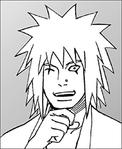
木ノ葉隠れの里生まれ。妙木山での仙人修業を経て、執筆活動に入る。
『ド根性忍伝』でデビュー。その他の著作に『イチャイチャパラダイス』などがある。
座右の銘は「座って半畳、寝て一畳」
岸本斉史
１９７４年11月８日生まれ。岡山県出身。 年漫画『カラクリ』でデビュー。
年漫画『カラクリ』でデビュー。 年より表題作にて週刊少年ジャンプ連載開始。15年にわたってジャンプのトップを走り続け、少年漫画の金字塔として国内外で絶大な支持を得る。
年より表題作にて週刊少年ジャンプ連載開始。15年にわたってジャンプのトップを走り続け、少年漫画の金字塔として国内外で絶大な支持を得る。
東山彰良
１９６８年台湾生まれ。第１回「このミステリーがすごい！」大賞銀賞・読者賞を受賞し、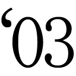年『逃亡作法 TURD ON THE RUN』で作家デビュー。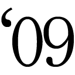年『路傍』で第11回大藪春彦賞を受賞。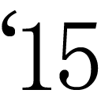年『流』で第153回直木賞受賞。著書多数。
本書は書き下ろしです。
ジャンプジェイブックスDIGITAL
ＮＡＲＵＴＯ‐ナルト‐
ド純情忍伝
著者 岸本斉史／東山彰良
©2015 M.KISHIMOTO/A.HIGASHIYAMA
２０１５年12月31日発行
この電子書籍は、ジャンプジェイブックス「ＮＡＲＵＴＯ‐ナルト‐ ド純情忍伝」
２０１５年８月９日発行の第１刷を底本としています。
装丁 川畠弘行（テラエンジン）
編集協力 添田洋平（つばめプロダクション）
編集人 浅田貴典
発行者 鈴木晴彦
発行所 株式会社 集英社
〒１０１－８０５０
東京都千代田区一ツ橋２丁目５番10号
０３－３２３０－６０８０（読者係）
制作所 株式会社ＩＣＥ
本作品の全部また一部を無断で複製、転載、改竄、インターネット上に掲載すること、および有償無償に関わらず、本データを第三者に譲渡することを禁じます。なお個人利用の目的であっても、コピーガードを解除しての複製は、法律で禁じられています。